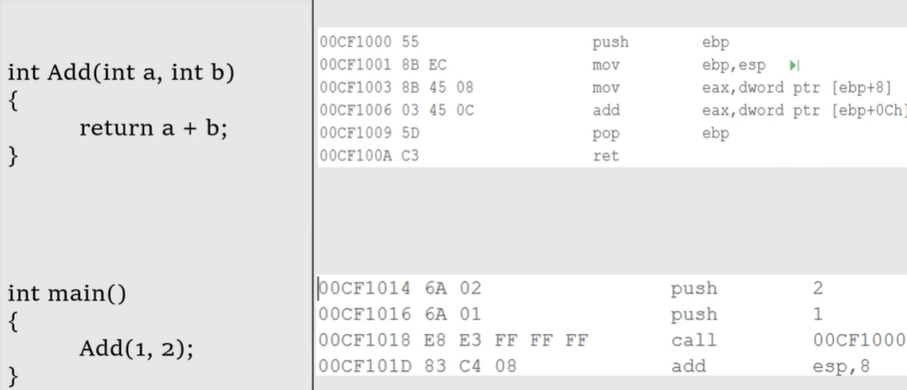
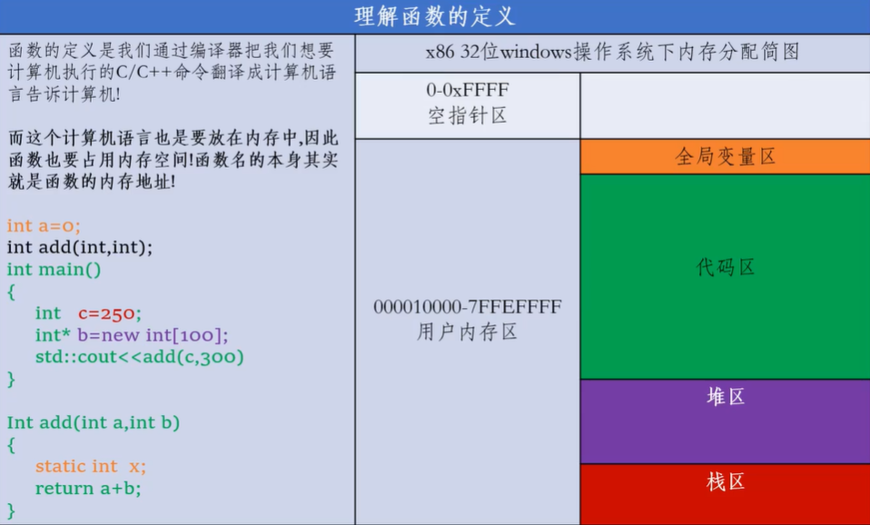
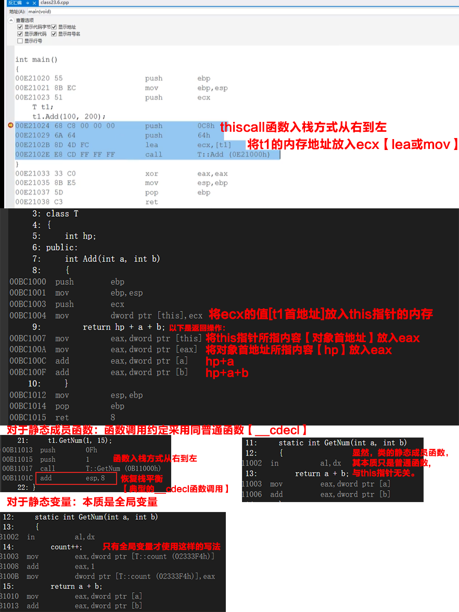
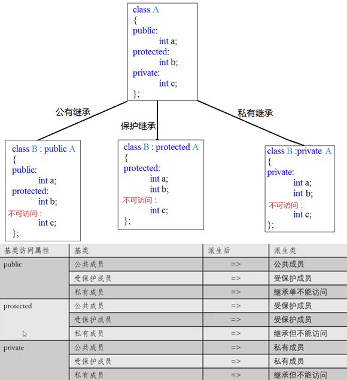
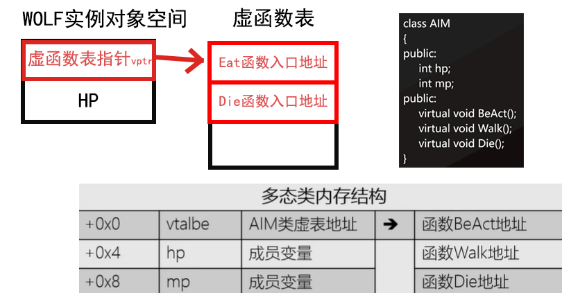
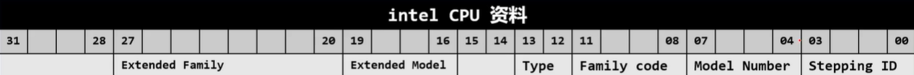

CONTENT OUTLINE C++ 核心编程
内存分区模型 引用 函数提高 类和对象 运算符重载 类的继承 类的多态 编译器 二、C++ 核心编程 1 内存分区模型 C++程序在执行时，将内存大方向划分为4个区域
代码区：存放函数体的二进制代码，由操作系统进行管理的 全局区：存放全局变量和静态变量以及常量 栈区：由编译器自动分配释放，存放函数的参数值,局部变量等【速度快、容量小】 堆区：由程序员分配和释放，若程序员不释放,程序结束时由操作系统回收【自由存储区】 内存四区意义：
不同区域存放的数据，赋予不同的生命周期, 给我们更大的灵活编程
1.1 程序运行前 在程序编译后，生成了exe可执行程序，未执行该程序前 分为两个区域
代码区：
存放 CPU 执行的机器指令
代码区是共享 的，共享的目的是对于频繁被执行的程序，只需要在内存中有一份代码即可
代码区是只读 的，使其只读的原因是防止程序意外地修改了它的指令
全局区：
全局变量和静态变量存放在此.
全局区还包含了常量区, 字符串常量和其他常量也存放在此.
该区域的数据在程序结束后由操作系统释放 .
1 2 3 4 5 6 7 8 9 10 11 12 13 14 15 16 17 18 19 20 21 22 23 24 25 26 27 28 29 30 31 32 33 34 35 36 37 38 39 40 41 42 43 int g_a = 10 ;int g_b = 10 ;const int c_g_a = 10 ;const int c_g_b = 10 ;int main () int a = 10 ; int b = 10 ; cout << "局部变量a地址为： " << (int )&a << endl ; cout << "局部变量b地址为： " << (int )&b << endl ; cout << "全局变量g_a地址为： " << (int )&g_a << endl ; cout << "全局变量g_b地址为： " << (int )&g_b << endl ; static int s_a = 10 ; static int s_b = 10 ; cout << "静态变量s_a地址为： " << (int )&s_a << endl ; cout << "静态变量s_b地址为： " << (int )&s_b << endl ; cout << "字符串常量地址为： " << (int )&"hello world" << endl ; cout << "字符串常量地址为： " << (int )&"hello world1" << endl ; cout << "全局常量c_g_a地址为： " << (int )&c_g_a << endl ; cout << "全局常量c_g_b地址为： " << (int )&c_g_b << endl ; const int c_l_a = 10 ; const int c_l_b = 10 ; cout << "局部常量c_l_a地址为： " << (int )&c_l_a << endl ; cout << "局部常量c_l_b地址为： " << (int )&c_l_b << endl ; system("pause" ); return 0 ; }
打印结果：
总结 ：
C++中在程序运行前分为全局区和代码区 代码区特点是共享和只读 全局区中存放全局变量、静态变量、常量 常量区中存放 const修饰的全局常量 和 字符串常量 1.2 程序运行后 栈区：
由编译器自动分配释放, 存放函数的参数值,局部变量等
注意事项：不要返回局部变量的地址，栈区开辟的数据由编译器自动释放
1 2 3 4 5 6 7 8 9 10 11 12 13 14 15 16 17 int * func () int a = 10 ; return &a; } int main () int *p = func(); cout << *p << endl ; cout << *p << endl ; system("pause" ); return 0 ; }
堆区：
由程序员分配释放,若程序员不释放,程序结束时由操作系统回收
在C++中主要利用new在堆区开辟内存
1 2 3 4 5 6 7 8 9 10 11 12 13 14 15 16 17 18 int * func () int * a = new int (10 ); return a; } int main () int *p = func(); cout << *p << endl ; cout << *p << endl ; system("pause" ); return 0 ; }
总结：
堆区数据由程序员管理开辟和释放
堆区数据利用new关键字进行开辟内存
1.3 new操作符 C++中利用==new==操作符在堆区开辟数据【基于C语言的内存分配实现】
堆区开辟的数据，由程序员手动开辟，手动释放，释放利用操作符 ==delete==
语法：new 数据类型【利用new创建的数据，会返回该数据对应的类型的指针；失败则返回0】
1 2 3 4 5 6 7 8 9 10 11 12 13 14 15 16 17 18 19 20 21 22 23 24 25 int * func () int * a = new int (10 ); return a; } int main () int *p = func(); int *pp = new int [3 ]; cout << *p << endl ; cout << *p << endl ; delete p; delete [] pp; system("pause" ); return 0 ; }
1 2 3 4 5 6 7 8 9 10 11 12 13 14 15 16 17 18 19 20 21 22 int main () int * arr = new int [10 ]; for (int i = 0 ; i < 10 ; i++) { arr[i] = i + 100 ; } for (int i = 0 ; i < 10 ; i++) { cout << arr[i] << endl ; } delete [] arr; system("pause" ); return 0 ; }
1.4 动态内存分配【C】 C语言中的内存动态分配 malloc 函数 ：void* malloc(size_t size);【size_t 是自定义类型：unsigned】
功能：为用户分配 size 字节内存，并返回内存分配的地址【该地址为void类型】；分配失败返回0。
下面的代码应该是一种新手常见的错误：
1 2 3 4 5 6 7 8 9 10 11 12 13 14 15 16 17 18 19 20 21 #include <iostream> using namespace std ;int main () unsigned x; cin >> x; int *p = (int *)malloc (x * sizeof (int )); if (p == 0 ){ cout << "内存分配失败" << endl ; } system("pause" ); return 0 ; }
另一个内存分配的函数 ：void* calloc(x, sizeof(int)); 其与malloc有两点区别：
只需提供元素个数，函数内部完成乘法计算 自动初始化为0 第三个函数 【重新分配】：void* realloc(void* _Block, size_t Size);；如果分配失败返回0
注意： 上面的函数分配的都是连续的内存
第四个函数 ： void free(void* Block);
free后的指针变为悬挂指针，需要重置为0来避免出错
补充：内存拷贝函数 【void* memcpy(void* _Dst, const void* _Src, Size_t Size);】
1 2 3 4 5 6 7 8 9 10 int main () int a[3 ]{1 ,2 ,3 ,4 }; int *b = new int [5 ]; memcpy (b, a, 2 * sizeof (int )); system("pause" ); return 0 ; }
补充：内存设置函数 【void* memset(void* _Dst, int val, Size_t Size);】
功能：将该区域的每一个子节设置为val
注意：其设置的是每一个字节，如果用0x123h来设置，最高位会被舍弃，结果等价于用0x23h来操作
1.5 动态分配内存的风险 1.5.1 悬挂指针 1 2 3 4 5 6 7 8 9 10 11 12 13 14 15 16 17 18 19 20 21 22 23 24 25 26 #include <iostream> using namespace std ;int main () int * p = (int *)malloc (5 * sizeof (int )); p[0 ] = 205 ; free (p); p[2 ] = 255 ; int * pp = new int [1000 ]; pp[0 ] = 205 ; int * tmp = pp; delete [] pp; tmp[1 ] = 1 ; system("pause" ); return 0 ; }
1.5.2 内存碎片 对于嵌入式开发等对内存要求高的方向，需要注意；除此以外，new和delete，以及足够的虚拟内存也会帮助解决内存碎片的问题。
2、引用 2.1 引用的基本使用 **作用： **给变量起别名【别名与原变量的内存地址一致，用于提高代码效率】
语法： 数据类型 &别名 = 原名
1 2 3 4 5 6 7 8 9 10 11 12 13 14 15 16 17 18 19 20 21 22 23 int main () int a = 10 ; int &b = a; cout << "a = " << a << endl ; cout << "b = " << b << endl ; b = 100 ; cout << "a = " << a << endl ; cout << "b = " << b << endl ; int aa[]{1 ,2 ,3 }; for (int & x : aa) { x = x + 1 ; } system("pause" ); return 0 ; }
2.2 引用注意事项 引用必须初始化 引用在初始化后，不可以改变【有时“改变”的时候，被视为赋值操作】 1 2 3 4 5 6 7 8 9 10 11 12 13 14 15 16 int main () int a = 10 ; int b = 20 ; int &c = a; c = b; cout << "a = " << a << endl ; cout << "b = " << b << endl ; cout << "c = " << c << endl ; system("pause" ); return 0 ; }
2.3 引用做函数参数 作用： 函数传参时，可以利用引用的技术让形参修饰实参
优点： 可以简化指针修改实参
1 2 3 4 5 6 7 8 9 10 11 12 13 14 15 16 17 18 19 20 21 22 23 24 25 26 27 28 29 30 31 32 33 34 35 36 37 38 39 40 void mySwap01 (int a, int b) int temp = a; a = b; b = temp; } void mySwap02 (int * a, int * b) int temp = *a; *a = *b; *b = temp; } void mySwap03 (int & a, int & b) int temp = a; a = b; b = temp; } int main () int a = 10 ; int b = 20 ; mySwap01(a, b); cout << "a:" << a << " b:" << b << endl ; mySwap02(&a, &b); cout << "a:" << a << " b:" << b << endl ; mySwap03(a, b); cout << "a:" << a << " b:" << b << endl ; system("pause" ); return 0 ; }
总结：通过引用参数产生的效果同按地址传递是一样的。引用的语法更清楚简单
2.4 引用做函数返回值 作用：引用是可以作为函数的返回值存在的
注意：不要返回局部变量引用
用法：函数调用作为左值
静态变量只被定义一次【涉及内存分配，也只有一次】，程序结束自动释放
示例：
1 2 3 4 5 6 7 8 9 10 11 12 13 14 15 16 17 18 19 20 21 22 23 24 25 26 27 28 29 30 31 32 33 34 int & test01 () int a = 10 ; return a; } int & test02 () static int a = 20 ; return a; } int main () int & ref = test01(); cout << "ref = " << ref << endl ; cout << "ref = " << ref << endl ; int & ref2 = test02(); cout << "ref2 = " << ref2 << endl ; cout << "ref2 = " << ref2 << endl ; test02() = 1000 ; cout << "ref2 = " << ref2 << endl ; cout << "ref2 = " << ref2 << endl ; system("pause" ); return 0 ; }
2.5 引用的本质 本质：引用的本质在c++内部实现是一个指针常量.
讲解示例：
1 2 3 4 5 6 7 8 9 10 11 12 13 14 15 16 17 void func (int & ref) ref = 100 ; } int main () int a = 10 ; int & ref = a; ref = 20 ; cout << "a:" << a << endl ; cout << "ref:" << ref << endl ; func(a); return 0 ; }
结论：C++推荐用引用技术，因为语法方便，引用本质是指针常量，但是所有的指针操作编译器都帮我们做了
2.6 常量引用 作用： 常量引用主要用来修饰形参 ，防止误操作
在函数形参列表中，可以加==const修饰形参==，防止形参改变实参
1 2 3 4 5 6 7 8 9 10 11 12 13 14 15 16 17 18 19 20 21 22 23 void showValue (const int & v) cout << v << endl ; } int main () const int & ref = 10 ; cout << ref << endl ; int a = 10 ; showValue(a); system("pause" ); return 0 ; }
2.7 右值引用 函数参数：右值引用【优化内存开销】
1 2 3 4 5 6 7 8 9 10 11 12 13 14 15 16 17 18 19 20 21 22 23 24 25 26 27 28 29 30 31 32 33 34 35 36 37 38 #include <iostream> using namespace std ;void add (int & a) a += 10 ; } void add1 (int && a) cout << a << endl ; } int main () int x = 1 ; add(x); cout << x << endl ; x = x + 10 + 1 ; add(x); cout << x << endl ; int a[10 ]; *(a + 1 ) = 100 ; int & y = x; int && z = 20 + 200 ; z = 1000 ; add1(z+20 +200 ); system("pause" ); return 0 ; }
另一个例子：
1 2 3 4 5 6 7 8 9 10 11 12 13 14 15 16 17 18 19 20 21 22 23 24 25 26 27 28 29 30 31 32 33 34 35 36 37 38 39 40 41 42 #include <iostream> using namespace std ;struct Role { int hp; int mp; }; Role createM () Role rt{ 10 ,20 }; return rt; } void show (Role r) cout << r.hp << "/" << r.mp << endl ; } void showR (Role&& r) cout << r.hp << "/" << r.mp << endl ; } void showL (Role& r) cout << r.hp << "/" << r.mp << endl ; } int main () show(createM()); showR(createM()); showL(createM()); system("pause" ); return 0 ; }
2.8 引用的其他注意 2.8.1 类型转换 1 2 3 4 5 6 7 8 9 10 11 12 13 14 15 16 17 18 19 20 21 22 23 24 25 26 27 28 29 30 31 32 33 34 #include <iostream> using namespace std ;void add1 (int a) a += 10 ; } void add2 (int & a) a += 10 ; } int main () int x = 1 ; add1(x); cout << x << endl ; add2(x); cout << x << endl ; float y = 1.1f ; add1(y); int a[100 ]; int (&b)[100 ] = a; system("pause" ); return 0 ; }
3 函数提高 3.1 函数默认参数 在C++中，函数的形参列表中的形参是可以有默认值 的。
语法：返回值类型 函数名 （参数= 默认值）{}
1 2 3 4 5 6 7 8 9 10 11 12 13 14 15 16 17 18 19 20 int func (int a, int b = 10 , int c = 10 ) return a + b + c; } int func2 (int a = 10 , int b = 10 ) int func2 (int a, int b) return a + b; } int main () cout << "ret = " << func(20 , 20 ) << endl ; cout << "ret = " << func(100 ) << endl ; system("pause" ); return 0 ; }
3.2 函数占位参数 C++中函数的形参列表里可以有占位参数，用来做占位，调用函数时必须填补该位置
语法： 返回值类型 函数名 (数据类型){}
在现阶段函数的占位参数存在意义不大，但是后面的课程中会用到该技
1 2 3 4 5 6 7 8 9 10 11 12 13 14 15 16 17 void func (int a, int ) cout << "this is func" << endl ; } void func (int a, int = 10 ) cout << "this is func" << endl ; } int main () func(10 ,10 ); system("pause" ); return 0 ; }
3.3 函数的本质 3.3.1 学习底层 查看反汇编：打断点 / 开始调试 / 调试-窗口-反汇编
建议一：调整为 Release【发布模式】，可以减少无用的多余汇编，便于理解
建议二：解决方案的工程右击选择属性，选择【C/C++ | 优化】优化已禁用，便于初级理解汇编

1 2 3 4 5 6 7 8 9 10 11 12 13 14 15 16 17 18 19 20 21 22 23 24 25 26 27 28 29 30 #include <iostream> using namespace std ;int Add (int a, int b) return a + b; } int main () int c = Add(1 , 2 ); cout << c << endl ; cout << Add << endl ; char * str = (char *)Add; for (int i = 0 ; i < 30 ; i++) { cout << hex << (int )str[i] << endl ; } system("pause" ); return 0 ; }
因此，函数名本质是个地址，该地址空间存放代码。
3.3.2 从函数的角度理解栈 问题： 变量的本质是对应的内存空间，因此每个变量都需要独立的内存空间。在实际开发过程中，一个函数可能被重复调用，如果每次都重新分配内存空间，那么系统开销会非常大；也不能提前分配固定大小的内存【万一一次也不被调用】。
由此才用了栈的概念，这是一段提前分配好的内存空间，主要用来存放临时变量。这样做，只需要管理好栈的读写，就可以避免频繁的内存分配和内存浪费。
1 2 3 4 5 6 7 8 9 10 11 12 13 14 15 16 17 18 19 20 21 22 23 24 25 26 27 28 29 #include <iostream> using namespace std ;int Ave (int a, int b) a = a + 250 ; return a + b; } int Add (int a, int b) int c = 250 ; int d = Ave(a, b); c = c + d; return c; } int main () cout << Add << endl ; system("pause" ); int x = Add(250 , 50 ); cout << x << endl ; return 0 ; }
反汇编分析见【CPP-BASE-supplement】
栈是预先分配好的连续的内存空间，其中包含局部变量、函数参数等，通过esp、ebp来控制创建和释放 栈平衡如果被破坏，函数可能无法返回正确的位置。【利用此原理，可以控制目标程序进入指定位置，来获取目标操作系统的控制权限，即栈攻击】 栈溢出攻击示例：
1 2 3 4 5 6 7 8 9 10 11 12 13 14 15 16 17 18 19 20 21 22 23 24 25 26 27 28 29 30 31 32 33 34 35 36 37 38 39 40 41 42 43 44 45 46 47 48 49 50 51 52 53 54 55 56 57 58 59 60 61 #include <iostream> #include <iomanip> void Hack () unsigned long long x = 0 ; for (int i = 0 ; true ; i++) { if (i % 100000000 == 0 ) { system("cls" ); std ::cout << "\n■■■■■■■■■■■■■■■■■■■■■■■■■■■■■■\n" ; std ::cout << "\n 你的系统已经被我们拿下! hacked by 黑兔档案局:[ID:000001 ]\n" ; std ::cout << "\n 加群:868267304 解除\n" ; std ::cout << "\n\\>正在传输硬盘数据....已经传输" << x++ << "个文件......\n\n" ; std ::cout << std ::setfill('>' )<< std ::setw(x % 60 ) << "\n" ; std ::cout << "\n\\>摄像头已启动!<==============\n\n" ; std ::cout << std ::setfill('#' ) << std ::setw(x % 60 ) << "\n" ; std ::cout << "\n\\>数据传输完成后将启动自毁程序!CPU将会温度提升到200摄氏度\n" ; std ::cout << "\n■■■■■■■■■■■■■■■■■■■■■■■■■■■■■■\n" ; } } } int GetAge () int rt; std ::cout << "请输入学员的年龄:" ; std ::cin >> rt; return rt; } int count () int i{}; int total{}; int age[10 ]{}; do { age[i] = GetAge(); total += age[i]; } while (age[i++]); return total; } int main () std ::cout << "======= 驴百万学院 学员总年龄统计计算系统 =====\n" ; std ::cout << "\n API:" <<Hack<<std ::endl ; std ::cout << "\n[说明:最多输入10个学员的信息,当输入0时代表输入结束]\n\n" ; std ::cout << "\n驴百万学院的学员总年龄为:" << count(); }
3.4 函数指针 函数返回类型 （*函数指针变量名）（参数类型 名称，...）
例：int (*pAdd)(int a, int b)【只要符合返回值类型和参数类型即可指向】
1 2 3 4 5 6 7 8 9 10 11 12 13 14 15 16 17 18 19 20 21 22 23 24 25 26 27 28 29 30 31 32 33 34 35 36 37 38 39 40 41 #include <iostream> using namespace std ;typedef int (*p) (int , int ) using pp = int (*)(int , int );int Add (int a, int b) return a + b; } float Addf (int a, int b) return (a + b)/2 ; } int main () int (*pAdd)(int , int ) = Add; int c = pAdd(1 , 2 ); cout << c << endl ; int (*pAddf)(int , int ) = (int (*)(int , int ))Addf; cout << pAdd(1 , 2 ) << endl ; p pAddf1 = (p)Addf; pp pAddf2 = (pp)Addf; system("pause" ); return 0 ; }
结构体作为参数的函数指针：
1 2 3 4 5 6 7 8 9 10 11 12 13 14 15 16 17 18 19 20 21 22 23 24 25 26 27 28 29 30 31 32 33 34 35 36 37 38 39 40 41 42 #include <iostream> using namespace std ;struct Role { int hp; int mp; }; typedef int (*pr) (Role) typedef int (*p) (int , int ) using pp = int (*)(int , int );using ppr = int (*)(Role);int Exp (Role r) return r.hp + r.mp; } int test (int a, int b, pp x) return x(a, b); } int main () Role r1{ 10 ,20 }; cout << Exp(r1) << endl ; pr ptrExp1 = Exp; cout << ptrExp1(r1) << endl ; p ptrExp1 = (p)Exp; cout << ptrExp1(r1) << endl ; system("pause" ); return 0 ; }
注意：指针函数是函数，其返回值是指针；而函数指针是指针，是指向函数的指针。
3.5 函数重载 3.5.1 函数重载概述 作用： 函数名可以相同，提高复用性
函数重载满足条件：
同一个作用域下 函数名称相同 函数参数类型不同 或者 个数不同 或者 顺序不同 非纯C环境 注意:
函数的返回值不可以作为函数重载的条件【重载不能仅仅是返回值不同】 参数是指针或数组，其本质都是指针，属于相同类型 1 2 3 4 5 6 7 8 9 10 11 12 13 14 15 16 17 18 19 20 21 22 23 24 25 26 27 28 29 30 31 32 33 34 35 36 37 38 39 40 41 void func () cout << "func 的调用！" << endl ; } void func (int a) cout << "func (int a) 的调用！" << endl ; } void func (double a) cout << "func (double a)的调用！" << endl ; } void func (int a ,double b) cout << "func (int a ,double b) 的调用！" << endl ; } void func (double a ,int b) cout << "func (double a ,int b)的调用！" << endl ; } int main () func(); func(10 ); func(3.14 ); func(10 ,3.14 ); func(3.14 , 10 ); system("pause" ); return 0 ; }
3.5.2 函数重载注意事项 引用作为重载条件 函数重载碰到函数默认参数，产生歧义的不可以重载 函数重载的函数参数，如果是临时变量【比如经过强制类型转换后的值，这样的值只是临时变量】是无法被引用的【引用的本质是指针，而临时变量是没有固定内存地址的】 函数重载的函数参数，一个是int，一个是 const int，本质都无法印象外部变量，因此属于相同情况 1 2 3 4 5 6 7 8 9 10 11 12 13 14 15 16 17 18 19 20 21 22 23 24 25 26 27 28 29 30 31 32 33 34 35 36 37 38 39 40 41 42 43 44 45 46 void func (int &a) cout << "func (int &a) 调用 " << endl ; } void func (const int &a) cout << "func (const int &a) 调用 " << endl ; } void func2 (int a, int b = 10 ) cout << "func2(int a, int b = 10) 调用" << endl ; } void func2 (int a) cout << "func2(int a) 调用" << endl ; } int main () int a = 10 ; func(a); func(10 ); system("pause" ); return 0 ; }
3.6 函数模板 对函数重载的补充
函数模板是面向编译器的，对于不确定的类型可以声明未知类型代替，对于确定的可以直接指定。除此以外，就是函数，可以有默认参数、重载等。
3.6.1 举例 1 2 3 4 5 6 7 8 9 10 11 12 13 14 15 16 17 18 19 20 21 22 23 24 25 26 27 28 29 30 31 32 33 #include <iostream> using namespace std ;int ave (int a, int b) return (a+b)/2 ; } float ave (float a, float b) return (a + b) / 2 ; } template <typename T> T ave (T a, T b) return (a + b) / 2 ; } int main () short a{ 1 }, b{ 2 }; cout << ave(a, b)<<endl ; cout << ave<int >(2 , 2.0f ) << endl ; system("pause" ); return 0 ; }
3.6.2 函数模板和重载 当函数模板中，使用指针传参时，会出现一系列问题，这些问题需要额外的处理。
注意优先级： 函数重载 > 函数模板例外处理 > 函数模板
1 2 3 4 5 6 7 8 9 10 11 12 13 14 15 16 17 18 19 20 21 22 23 24 25 26 27 28 29 30 31 32 33 34 35 36 37 #include <iostream> using namespace std ;template <typename T>T bigger (T a, T b) return a > b ? a : b; } template <>int * bigger (int * a, int * b) return *a > *b ? a : b; } float * bigger (float * a, float * b) return *a > *b ? a : b; } int main () int a{ 100 }, b{ 200 }; int c; c = *bigger(&a, &b); cout << c << endl ; system("pause" ); return 0 ; }
函数模板的重载：
1 2 3 4 5 6 7 8 9 10 11 12 13 14 15 16 17 18 19 20 21 22 23 24 25 26 #include <iostream> using namespace std ;template <typename T>T ave (T a, T b) return (a + b) / 2 ; } template <typename T>T ave (T a, T b, T c) return (a + b + c) / 3 ; } int main () int a{ 100 }, b{ 200 }, d{ 300 }; cout << ave(a, b) << endl ; cout << ave(a, b, d) << endl ; system("pause" ); return 0 ; }
3.6.3 函数模板参数 1 2 3 4 5 6 7 8 9 10 11 12 13 14 15 16 17 18 19 20 21 22 23 24 #include <iostream> using namespace std ;template <typename TR, typename T1, typename T2>TR ave (T1 a, T2 b) return (a + b) / 2 ; } template <typename TR = int , typename T1, typename T2>TR aveT1(T1 a, T2 b) { return (a + b) / 2 ; } int main () cout << ave<int >(3 , 2.22 ) << endl ; cout << aveT1(3 , 2.22 ) << endl ; system("pause" ); return 0 ; }
非类型的模板参数【指定类型的变量】【可处理不定长数组问题】 1 2 3 4 5 6 7 8 9 10 11 12 13 14 15 16 17 18 19 20 21 22 23 24 25 26 27 28 29 30 31 32 33 34 35 36 37 38 39 40 41 42 43 44 45 46 47 #include <iostream> using namespace std ;template <int max = 2000 , int min , typename T>bool changeHp(T& hp, T damage){ hp -= damage; if (hp > max ) hp = max ; return hp < min ; } template <typename T, int max = 2000 , int min = 1000 >bool changeHp2(T& hp, T damage){ hp -= damage; if (hp > max ) hp = max ; return hp < min ; } template <typename T, short COUNT>T ave (T(&ary)[COUNT]) T all{}; for (int i = 0 ; i < COUNT; i++) { all += ary[i]; } return all / COUNT; } int main () int hp = 2500 ; const int x = 2000 ; changeHp<2000 , 1000 >(hp, 100 ); cout << "hp:" << hp << endl ; int a[5 ]{ 1 ,2 ,3 ,4 ,5 }; cout << "ave:" << ave(a)<<endl ; system("pause" ); return 0 ; }
3.6.4 函数模板本质 对下面代码得出的反汇编进行分析
1 2 3 4 5 6 7 8 9 10 11 12 13 14 template <typename T>T ave (T a, T b) return (a + b) / 2 ; } int main () ave(100 , 200 ); ave(short (100 ), short (200 )); system("pause" ); return 0 ; }
反汇编：
1 2 3 4 5 6 7 8 12: ave(100, 200); 00007FF77F60255B mov edx,0C8h 00007FF77F602560 mov ecx,64h 00007FF77F602565 call 00007FF77F60167C 13: ave(short(100), short(200)); 00007FF77F60256A mov dx,0C8h 00007FF77F60256E mov cx,64h 00007FF77F602572 call 00007FF77F601681
可以看到，同一个函数的调用地址不同，即编译器根据模板生成了两个函数。
也就是说，每次调用模板函数，编译器都会生成一个函数，但完全相同的模板参数的函数只生成一次【方便的空间代价】
总的来说，函数模板的语法，是跟编译器打交道。
3.6.5 练习：万能排序 1 2 3 4 5 6 7 8 9 10 11 12 13 14 15 16 17 18 19 20 21 22 23 24 25 26 27 28 29 30 31 32 33 34 35 36 37 38 39 40 41 42 #include <iostream> #include <string> using namespace std ;template <typename T>void Swap (T& a, T& b) T tmp{ a }; a = b; b = tmp; } template <typename T>void sort (T* ary, unsigned count, bool bigsort = true ) for (int i = 1 ; i < count; i++) { for (int j = 1 ; j < count; j++) { bool bcase = bigsort ? ary[j] > ary[j - 1 ]:ary[j] < ary[j - 1 ]; if (bcase) Swap(ary[j], ary[j - 1 ]); } } } int main () int a[6 ]{ 1 ,5 ,2 ,4 ,3 ,6 }; string str[3 ]{ "12" ,"456" ,"01" }; sort(a, 6 ); sort(str, 3 ); for (auto x : a) cout << x << " " ; cout << endl ; for (auto x : str) cout << x << " " ; system("pause" ); return 0 ; }
3.7 推断函数模板 3.7.1 auto auto 可以声明一个变量，让编译器根据变量的值来推断变量类型。例如：
利用 auto 的这一特性，我们可以利用auto来创建一个函数：
1 2 3 4 5 6 7 auto ave (int a, int b) return a + b; } int ave (int a, int b) return a + b; }
注意：上面的 auto 的例子只是演示，auto 的应用场景并非这里
auto 的注意事项
auto 不能保留 const 属性【如 auto 变量用 const 的变量赋值】auto 变量可由函数返回值赋值auto 会优先推断为值类型，而非引用类型【即如，变量 a 及其引用别名 la，为 auto 变量赋值，推断为变量a的类型】1 2 3 4 5 6 7 8 9 10 11 12 13 14 15 16 17 18 19 20 21 22 23 24 25 26 27 28 29 30 31 32 33 34 35 36 37 38 39 40 #include <iostream> using namespace std ;int & bigger (int & a, int & b) return a > b ? a : b; } auto biggerT(int& a, int& b) -> int& { return a > b ? a : b; } int main () int a{ 100 }, b{ 200 }, d{ 300 }; bigger(a, b) = 500 ; cout << b << endl ; biggerT(a, b) = 600 ; cout << b << endl ; cout << "auto的类型：" << typeid (biggerT(a, b)).name() << endl ; system("pause" ); return 0 ; }
3.7.2 decltype decltype 关键字 可以得出一个表达式的类型 。语法 ：decltype(表达式)
1 2 3 4 5 6 7 8 9 10 11 12 13 14 15 16 int a{5 }, c{6 };unsigned b{2 };int * pc{&c};decltype (a - b) x; decltype (*pc) y; decltype (pc[0 ]) y; decltype (pc[5 ]) y; decltype (*pc + 1 ) z; decltype ((a)) z;
unsigned 的容量更大，故运算前 int 先转换为 unsigned 再运算
decltype 关键字处理原则：
如果 decltype 内的表达式没有经历过任何运算，那么得出的数据类型与表达式的数据类型相同，并且可以保留 const 和引用【auto 不会保留】 若其经历过运算，那么得出的数据类型根据运算结果是否有固定的内存地址【即左值】来决定。如果为左值，则就是该左值的数据类型；如果为右值，则为该结果的类型【如上例子中 的变量 x】。 如果 decltype 的表达式是一个函数，那么得到的数据类型由函数返回值确定【编译器不会执行函数 ，但 auto 是会执行函数的】 3.7.3 auto->decltype 拖尾 对 auto 中案例的补充
1 2 3 4 5 6 7 8 9 10 11 12 13 14 15 16 17 18 19 20 21 22 23 24 25 26 27 28 29 30 31 32 33 34 35 36 37 38 39 40 41 42 43 44 45 46 47 48 #include <iostream> using namespace std ;int & bigger (int & a, int & b) return a > b ? a : b; } auto biggerT(int& a, int& b) -> int& { return a > b ? a : b; } auto biggerTT(int& a, int& b) -> decltype(a > b ? a : b) { return a > b ? a : b; } decltype (auto ) biggerTTT (int & a, int & b) return a > b ? a : b; } int main () int a{ 100 }, b{ 200 }, d{ 300 }; bigger(a, b) = 500 ; cout << b << endl ; biggerT(a, b) = 600 ; cout << b << endl ; biggerTT(a, b) = 700 ; cout << b << endl ; biggerTTT(a, b) = 800 ; cout << b << endl ; system("pause" ); return 0 ; }
3.7.4 推断函数模板的返回类型 尝试将以下函数修改为函数模板，对于第二个函数，依靠目前的知识无法完成【参数的类型不同】，下面是解决办法【多申明几个位置类型变量】：
1 2 3 4 5 6 7 8 9 10 11 12 13 14 15 16 17 18 19 20 21 22 23 24 25 26 27 28 29 30 31 32 33 34 35 36 37 38 39 40 41 42 43 44 45 46 47 48 49 50 51 52 53 54 55 56 57 58 59 60 61 62 63 64 #include <iostream> using namespace std ;int ave1 (int a, int b) return (a + b) / 2 ; } int ave2 (float a, int b) return (a + b) / 2 ; } double ave3 (int a, float b) return (a + b) / 2 ; } template <typename T>T ave (T a, T b) return (a + b) / 2 ; } template <typename T1, typename T2>T2 ave2T1 (T1 a, T2 b) return (a + b) / 2 ; } template <typename T1, typename T2>T1 ave2T2 (T1 a, T2 b) return (a + b) / 2 ; } template <typename T1, typename T2, typename TR>TR ave3T1 (T1 a, T2 b) return (a + b) / 2 ; } template <typename TR, typename T1, typename T2>TR ave3T2 (T1 a, T2 b) return (a + b) / 2 ; } int main () cout << ave2T1(3.2 , 2 ) << endl ; cout << ave2T1<float , int >(3.2 , 2 ) << endl ; cout << ave3T1<int , float , double >(3 , 2.22 ) << endl ; cout << ave3T2< double >(3 , 2.22 ) << endl ; system("pause" ); return 0 ; }
下面推断函数模板的返回类型：【以比较两个不同类型值大小的代码为例】
1 2 3 4 5 6 7 8 9 10 11 12 13 14 15 16 17 18 19 20 21 22 23 24 25 26 27 28 29 30 31 32 33 34 35 36 37 38 39 40 41 42 43 44 45 46 47 48 49 50 51 52 53 54 #include <iostream> using namespace std ;template <typename T1, typename T2>T1 bigger (T1 a, T2 b) return a > b ? a : b; } template <typename T1, typename T2>auto biggerAuto (T1 a, T2 b) return a > b ? a : b; } template <typename T1, typename T2>auto biggerAuto1(T1 a, T2 b) -> decltype(a > b ? a : b) { return a > b ? a : b; } template <typename T1, typename T2>decltype (auto ) biggerAuto2 (T1 a, T2 b) return a > b ? a : b; } template <typename T1, typename T2>decltype (auto ) biggerAuto3 (T1& a, T2& b) return a > b ? a : b; } int main () char a = 98 ; int b = 10000 ; float c = 10 ; cout << bigger(a, 1000 ) << endl ; cout << bigger(1000 , a) << endl ; cout << biggerAuto(a, 1000 ) << endl ; cout << biggerAuto3(c, b) << endl ; system("pause" ); return 0 ; }
3.8 C语言和C++联合编程 3.8.1 static inline 利用 static 可以声明一个静态变量
static 的变量，如果没有指定初始化，会自动初始化为0；且无论有无指定初始化值，都只会初始化一次！另外，此类变量位于全局区，生命周期很长，不会随函数运行结束而被释放。
使用 inline 来申明一个内联函数【老C++语法，基本已淘汰】，内联函数将会建议编译器把此函数处理出内联代码以提高性能【该建议是否被采纳，由编译器决定，现阶段的编译器都很智能，没必要去显式要求】
1 2 3 4 5 6 7 8 9 10 11 12 13 14 15 #include <iostream> using namespace std ;inline int add (int a, int b) return a + b; } int main () int c = add(1 , 2 ); system("pause" ); return 0 ; }
3.8.2 从编译器角度理解定义和声明 声明不涉及内存分配，但定义涉及内存分配 extern 关键字来声明变量，针对全局变量的声明【在函数内的变量声明没意义，故报错】 全局变量在全局区有固定的地址，函数变量没有固定的地址 1 2 3 4 5 6 7 8 9 10 11 12 13 14 15 16 17 18 19 20 21 22 23 24 25 #include <iostream> using namespace std ;int ave (int , int ) int ave (int a, int b) int all, all{12 };extern int ALL; int main () int c = ave(1 , 3 ); system("pause" ); return 0 ; } int ave (int a, int b) return (a + b) / 2 ; } int ALL = 20 ;

3.8.3 头文件和源文件 在本文件中调用其他文件中的函数，需要提前在本文件中声明即可。但随着声明越来越多，引入头文件，头文件中就是所谓了声明集合，最后 include 在本文件中即可。
头文件中可以写函数定义，但从编译器角度解释是不合适，从代码编写规范角度也不合适。
在编译器角度，编译器先将所有 cpp 源文件编译为目标文件【obj文件】【可能是按首字母顺序】，然后用obj文件组合为目标程序。而对于头文件，除非源文件调用，否则不会主动去编译；而且，源文件调用头文件的本质，就是将头文件的内容复制到源文件中而已。
此时，如果没有发生函数重载，在同一个工程中，就不能出现同名函数【联系头文件的复制本质，可知不同文件中也不能有同名函数】。如果在头文件中定义了函数【声明可以多次，但定义只能一次】，就会出现重定义的错误。
解决 ：声明可以多次，但定义只能一次
例外情况： 静态函数【static void fun(){}】，此类函数仅在使用该函数的文件内有效；内联函数；静态变量【static int a;】
头文件中可以用 extern 声明全局变量。
1 2 3 4 5 6 7 8 9 10 11 12 13 14 15 16 17 18 19 20 21 22 23 #include <iostream> // 现有库，已经被安装在了系统中 #include "emath.h" using namespace std ;int main () int c = ave(1 , 3 ); cout << c << endl ; system("pause" ); return 0 ; } #pragma once int ave (int , int ) int ave (int , int )
可以替代 #pragma once 的写法
1 2 3 4 5 6 7 8 9 #ifndef _HEMATH_ #define _HEMATH_ int ave (int , int ) int ave (int , int ) #endif
该预编译指令的现实场景用法：
1 2 3 4 5 6 7 void showWelcome () #ifdef _VIP std ::cout << "你好！" << std ::endl ; #endif }
总之，#pragma once 依赖文件，#ifdef 依赖宏定义名，且功能更强大
3.8.4 extern 在开发中，会面临C与C++混用的情况，它们对函数的处理是不同的。
对于上节提到的函数重定义的报错，C++中的报错提示为：
1 2 3 4 # C++支持函数重载，故函数名为下： "int _cdecl ave(void)"(?ave@@YAHXZ)已经在class1.obj中定义 # C不支持函数重载 _ave已经在e.obj中定义
故同时存在C++文件和C文件时，由于编译后名字不同，故不会发生函数重定义的错误。
混用正确调用的例子：【三种写法】
extern "C" int ave();extern "C" {...} 大括号中是所有C风格的函数在cpp源文件中，extern "C" {#include "e.h";} 1 2 3 4 5 6 7 8 9 10 11 12 13 14 15 16 17 18 19 20 21 22 23 24 25 26 27 28 29 30 31 #pragma once extern "C" { int ave () } int ave () return 1 ; } #include <iostream> extern "C" { #include "e.h" ; } int main () std ::cout << ave()<< std ::endl ; }
很遗憾，C无法使用C++风格的函数【比如，C下编译器只会找名为_ave的函数】，此类型情况的解决办法 是，在定义时，用上面 extern “C”的写法将C++风格的函数声明为C风格的函数。
反过来，C风格的写法下，无法识别 extern "C"。该问题的解决办法是：使用宏来判别风格类型。
C++风格下，默认定义了一个宏，名为__cplusplus
1 2 3 4 5 6 7 8 9 #ifdef __cplusplus extern "C" { #endif #include "emath.h" ; #include "pmath.h" ; #ifdef __cplusplus } #endif
上面的写法，可以保证一个源文件能同时在C或C++风格下运行。
注意：C++风格的函数被声明为C风格的函数时，就在也不支持函数重载了。
特别注意一个错误：【LNK4042：C和C++源文件混用的问题】
1 2 3 4 5 6 7 8 9 10 11 12 13 14 15 16 17 18 19 20 21 22 23 24 25 26 27 28 29 #pragma once int ave (int , int ) extern "C" int add (int , int ) int add () return a + b; } int ave (int a, int b) return (a + b) / 2 ; } #include <iostream> #include "math.h" int main () std ::cout << ave(1 , 5 )<< std ::endl ; std ::cout << add(1 , 5 )<< std ::endl ; }
该错误的原理要联系到编译的过程：编译器先将各个源文件编译为obj目标文件，再链接为目标程序。而在上面的代码中，math.cpp 和 math.c 都会被编译为math.obj，故找不到某一个函数。
3.8.5 封装自己的SDK：hongxin 生成.lib文件【静态库】【属性 | 常规 | 配置类型 | 静态库】
1 2 3 4 5 6 7 8 9 10 11 12 13 14 15 16 17 18 19 20 21 22 #pragma once int ave (int a, int b) namespace hongxin{ const char * GetVersion () } #include "hongxin.h" int ave (int a, int b) return (a + b) / 2 ; } namespace hongxin{ char }
生成静态库sdk：【右键工程 | 生成】，在工程目录中lib文件就是库文件【名字可更改】，可以配合头文件【说明文档】，在加一个示例程序就可以发布给别人用。当然，更多的是直接做成安装包【SDK】。
如果不安装，在新项目中使用lib文件，需要配置【属性 | VC++目录 | 包含目录】，将目录跟在后面即可。使用时，使用 #include <newname.h>；此时，还没将库文件放入，同样配置【… | 库目录】
但编译器不会主动链接库文件，需要手动完成【两种方法】
#pragma comment(lib, "hongxin.lib")【属性 | 链接器 | 输入 | 附加依赖项】加入hongxin.lib【会去库目录找文件】 1 2 3 4 5 6 7 8 9 10 11 #include <iostream> #include <hongxin.h> #pragma comment(lib, "hongxin.lib" ) int main () std ::cout << hongxin::GetVersion(); std ::cout << ave(1 , 7 ); }
3.8.6 自定义创建项目模板 【顶层任务栏：项目 | 导出模板 | 项目模板 | 可配置名称、图标 | 自动导入+完成】
生成一个zip文件，当下次创建新项目时，在所有语言下，就会出现自定义的模板。
发布的zip文件的再使用：直接copy到【我的文档 | Visual Studio xxxx | Templates | ProjectTemplates】
3.8.7 函数调用约定 __cdecl __stdcall __fastcall __thiscall【类访问】 __nakedcall【驱动】
函数调用约定时函数调用与被调用者之间的一种协定，主要包括两个内容：如果传递参数？如何恢复栈平衡？
1 2 3 4 5 6 7 8 9 int __cdecl ave (int a, int b) return a + b; } int main () ave(1 , 2 ); }
函数名被编译器修改为__cdecl+xxx，其参数入栈顺序从右到左；而堆栈平衡：谁调用谁平衡
正因为__cdecl这种堆栈平衡方式，能够支持不定量参数；
另一种暂时没遇到过的函数调用约定是：__stdcall。其参数入栈顺序从右到左；但此类函数的堆栈平衡恢复由原函数本身负责。从汇编角度，由ret 8完成
Windows 编程中WINAPI CALLBACK 都是__stdcall 的宏，生成的函数名会加下划线，后面跟@和参数尺寸
第三种函数调用约定是：__fastcall。其第一个参数通过ecx传递，第二个参数通过edx传递，剩余参数入栈顺序从右到左；此类函数的堆栈平衡恢复由原函数本身负责。【执行速度快，优先通过寄存器传参】【三参数时，汇编由 ret 4 返回】【x64默认为__fastcall】
4 类和对象 以下才是C++的内容
OOP【Object Oriented Programmming】即面向对象编程，是一种编程思想，通过把我们编程中遇到的事物抽象程对象来编程；与OOP相对的还有：面向对象设计OOD、面向对象分析OOA【OOP应当遵循OOD】
C++面向对象的三大特性为：==封装、继承、多态==
C++认为==万事万物都皆为对象==，对象上有其属性和行为
4.1 封装 4.1.1 封装的意义 封装是C++面向对象三大特性之一
封装的意义：
将属性和行为作为一个整体，表现生活中的事物 将属性和行为加以权限控制 封装意义一：
在设计类的时候，属性和行为写在一起，表现事物
语法： class 类名{ 访问权限： 属性 / 行为 };
示例1： 设计一个圆类，求圆的周长
1 2 3 4 5 6 7 8 9 10 11 12 13 14 15 16 17 18 19 20 21 22 23 24 25 26 27 28 29 30 31 32 33 34 35 36 37 38 39 const double PI = 3.14 ;class Circle { public : int m_r; double calculateZC () { return 2 * PI * m_r; } }; int main () Circle c1; c1.m_r = 10 ; cout << "圆的周长为： " << c1.calculateZC() << endl ; system("pause" ); return 0 ; }
示例2： 设计一个学生类，属性有姓名和学号，可以给姓名和学号赋值，可以显示学生的姓名和学号
1 2 3 4 5 6 7 8 9 10 11 12 13 14 15 16 17 18 19 20 21 22 23 24 25 26 27 28 29 class Student {public : void setName (string name) m_name = name; } void setID (int id) m_id = id; } void showStudent () cout << "name:" << m_name << " ID:" << m_id << endl ; } public : string m_name; int m_id; }; int main () Student stu; stu.setName("德玛西亚" ); stu.setID(250 ); stu.showStudent(); system("pause" ); return 0 ; }
封装意义二：
类在设计时，可以把属性和行为放在不同的权限下，加以控制
访问权限有三种：
public 公共权限 protected 保护权限【与继承相关】 private 私有权限【默认】 1 2 3 4 5 6 7 8 9 10 11 12 13 14 15 16 17 18 19 20 21 22 23 24 25 26 27 28 29 30 31 32 33 34 35 36 37 38 39 class Person { public : string m_Name; protected : string m_Car; private : int m_Password; public : void func () { m_Name = "张三" ; m_Car = "拖拉机" ; m_Password = 123456 ; } }; int main () Person p; p.m_Name = "李四" ; system("pause" ); return 0 ; }
4.1.2 struct和class区别 在C++中 struct和class唯一的区别 就在于 默认的访问权限不同
区别：
struct 默认权限为公共 class 默认权限为私有 1 2 3 4 5 6 7 8 9 10 11 12 13 14 15 16 17 18 19 20 21 22 class C1 { int m_A; }; struct C2 { int m_A; }; int main () C1 c1; c1.m_A = 10 ; C2 c2; c2.m_A = 10 ; system("pause" ); return 0 ; }
4.1.3 成员属性设置为私有 优点1： 将所有成员属性设置为私有，可以自己控制读写权限
优点2： 对于写权限，我们可以检测数据的有效性
1 2 3 4 5 6 7 8 9 10 11 12 13 14 15 16 17 18 19 20 21 22 23 24 25 26 27 28 29 30 31 32 33 34 35 36 37 38 39 40 41 42 43 44 45 46 47 48 49 50 51 52 53 54 55 class Person {public : void setName (string name) m_Name = name; } string getName () { return m_Name; } int getAge () return m_Age; } void setAge (int age) if (age < 0 || age > 150 ) { cout << "你个老妖精!" << endl ; return ; } m_Age = age; } void setLover (string lover) m_Lover = lover; } private : string m_Name; int m_Age; string m_Lover; }; int main () Person p; p.setName("张三" ); cout << "姓名： " << p.getName() << endl ; p.setAge(50 ); cout << "年龄： " << p.getAge() << endl ; p.setLover("苍井" ); system("pause" ); return 0 ; }
4.1.4 成员函数 类的占用空间大小：类变量大小【类成员函数为所有类对象公用，不占对象的存储空间 | sizeof】
空类的大小：1字节【使用该空类实例化后，编译器为区分实例对象，默认加入1字节用于区分】
1 2 3 4 5 6 7 8 9 10 11 12 13 14 15 16 17 18 19 20 21 22 23 24 25 26 27 28 29 30 31 32 33 #include <iostream> class Role { private : int hpRecover; void Init () public : int hp; int damage; void Act (Role& r) }; void Role::Act (Role& r) r.hp -= damage; } void Role::Init () hpRecover = 3 ; } class P {int main () Role user; P p1, p2; std ::cout << sizeof (user) << " " << sizeof (p1) << std ::endl ; system("pause" ); return 0 ; }
一般工程化时，一个类可能很多人在用，所以一般在单独文件中创建类【源文件|添加类】，生成一个头文件【类声明】，一个cpp源文件【成员函数定义】
inline内联函数 ：类似于getHp()等直接返回值的函数，推荐用inline写法【推荐直接写在头文件中】
1 2 3 4 5 6 7 8 9 10 11 12 13 class Role { private : int hpRecover; void Init () int hp; public : int damage; inline int getHp () { return hp; } };
如果此类函数在声明类时未使用inline修饰，在定义时也可以加上inline，以定义为准【重写原则】
4.1.5 const 常函数：
成员函数后 加const后我们称为这个函数为常函数 常函数内不可以修改成员属性 【引用也不可返回，因为引用的本质是指针，返回引用后可能会存在修改风险】【解决办法1：直接返回值不返回引用；解决办法2：再用const修饰函数返回值，要求不允许更改】 成员属性声明时加关键字mutable后 ，在常函数中依然可以修改 常函数内的 this 指针也变成了const指针 mutable：可变的【场景：如需要在常函数中记录被调用次数，即需要某变量++】
常对象：
声明对象前加 const 称该对象为常对象 常对象的成员变量的值不能被改变 常对象只能调用常函数 【意味着不能调用函数去改变成员变量值，没有任何方式改变对象的成员值】 也有人建议：凡是不涉及修改成员变量值的成员函数，都可以后加const修饰，以便于常对象调用；
另外，也可以利用函数重载，提供非const版本和const版本【仅是否const，就可以构成重载】
示例：
1 2 3 4 5 6 7 8 9 10 11 12 13 14 15 16 17 18 19 20 21 22 23 24 25 26 27 28 29 30 31 32 33 34 35 36 37 38 39 40 41 class Person {public : Person() { m_A = 0 ; m_B = 0 ; } void ShowPerson () const this ->m_B = 100 ; } void MyFunc () const } public : int m_A; mutable int m_B; }; int main () const Person person; cout << person.m_A << endl ; person.m_B = 100 ; person.MyFunc(); system("pause" ); return 0 ; }
const 类型转化 ：const_cast 可以将一个const变量的常量属性去掉，只有在极少数的情况下需要用此功能【一种C方式，一种C++方式，有区别】
1 2 3 4 5 6 7 8 9 10 11 12 13 14 15 16 17 18 19 20 21 22 23 24 25 26 27 28 29 30 31 32 33 34 35 36 37 38 39 40 41 42 43 44 45 46 47 48 49 50 51 52 53 54 55 56 57 58 59 60 61 #include <iostream> using namespace std ;class Role { private : int hp; public : int lv; int damage; void Act (Role& r) { r.hp -= damage; } inline int GetHp () const { return hp; } int GetLv () const { return lv; } int & GetLv () { return lv; } void setHp (int hp) { this ->hp = hp; } }; void test (Role* p) p->setHp(50 ); } int main () const Role user{}; Role monster; const Role* puser{ &user }; puser->GetHp(); cout << monster.GetHp()<<endl ; monster.GetLv() = 200 ; cout << monster.GetLv() << endl ; test((Role*)(&user)); test(const_cast <Role*>(&user)); system("pause" ); return 0 ; }
4.2 对象的初始化和清理 生活中我们买的电子产品都基本会有出厂设置，在某一天我们不用时候也会删除一些自己信息数据保证安全 C++中的面向对象来源于生活，每个对象也都会有初始设置以及 对象销毁前的清理数据的设置。 4.2.1 构造函数和析构函数 对象的初始化和清理 也是两个非常重要的安全问题。一个对象或者变量没有初始状态，对其使用后果是未知；同样的使用完一个对象或变量，没有及时清理，也会造成一定的安全问题
c++利用了构造函数 和析构函数 解决上述问题，这两个特殊的成员函数将会被编译器自动调用，完成对象初始化和清理工作。
对象的初始化和清理工作是编译器强制要我们做的事情，因此如果我们不提供构造和析构，编译器会提供，编译器提供的构造函数和析构函数是空实现。
构造函数：主要作用在于创建对象时为对象的成员属性赋值，构造函数由编译器自动调用，无须手动调用。 析构函数：主要作用在于对象销毁前 系统自动调用，执行一些清理工作。 构造函数语法： 类名(){}
构造函数，没有返回值也不写void 函数名称与类名相同 构造函数可以有参数，因此可以发生重载 程序在调用对象时候会自动调用构造，无须手动调用，而且只会调用一次 析构函数语法： ~类名(){}
析构函数，没有返回值也不写void 函数名称与类名相同。在名称前加上符号 ~ 析构函数不可以有参数 ，因此不可以发生重载 程序在对象销毁前会自动调用析构，无须手动调用，而且只会调用一次 1 2 3 4 5 6 7 8 9 10 11 12 13 14 15 16 17 18 19 20 21 22 23 24 25 26 27 28 29 class Person { public : Person() { cout << "Person的构造函数调用" << endl ; } ~Person() { cout << "Person的析构函数调用" << endl ; } }; int main () Person p; int a{1 }; while (a) { std ::cin >> a; } std ::cout << "\nending" << std ::endl ; system("pause" ); return 0 ; }
4.2.2 引入构造函数 1 2 3 4 5 6 7 8 9 10 11 12 13 14 15 16 17 18 19 20 21 22 23 24 25 26 27 28 29 30 31 32 33 34 #include <iostream> using namespace std ;class T { public : int hp; int mp; }; class TT { public : int hp; int GetMP () const return mp; } void SetMP (int _mp) private : int mp; }; int main () T t1{ 100 ,200 }; TT t2{}; t2.hp = 100 ; t2.SetMP(200 ); TT t3{ t2 }; system("pause" ); return 0 ; }
4.2.3 构造函数的分类及调用 两种分类方式：
按参数分为： 有参构造和无参构造 按类型分为： 普通构造和拷贝构造 三种调用方式：
1 2 3 4 5 6 7 8 9 10 11 12 13 14 15 16 17 18 19 20 21 22 23 24 25 26 27 28 29 30 31 32 33 34 35 36 37 38 39 40 41 42 43 44 45 46 47 48 49 50 51 52 53 54 55 56 57 58 59 60 61 62 63 64 65 class Person {public : Person() { cout << "无参构造函数!" << endl ; } Person(int a) { age = a; cout << "有参构造函数!" << endl ; } Person(const Person& p) { age = p.age; cout << "拷贝构造函数!" << endl ; } ~Person() { cout << "析构函数!" << endl ; } public : int age; }; void test01 () Person p; } void test02 () Person p1 (10 ) ; Person p2 = Person(10 ); Person p3 = Person(p2); Person p4 = 10 ; Person p5 = p4; } int main () test01(); system("pause" ); return 0 ; }
4.2.4 构造函数调用规则 调用规则 | default 关键字 | explicit 关键字
默认情况下，c++编译器至少给一个类添加3个函数
1．默认构造函数(无参，函数体为空)
2．默认析构函数(无参，函数体为空)
3．默认拷贝构造函数（对属性进行值拷贝）
构造函数调用规则 如下：
如果用户定义有参构造函数 ，c++不再提供默认无参构造 ，但是会提供默认拷贝构造 如果用户定义拷贝构造函数 ，c++不会再提供其他构造函数 只要定义过构造函数，默认构造函数就不会被定义。但有时候我们希望依然自动提供一个默认构造函数，要么自己显示补充，要么需要关键字 default。
1 2 3 4 5 6 7 8 9 10 11 12 13 14 15 16 class Person {public : Person() = default ; Person(int a) { age = a; cout << "有参构造函数!" << endl ; } public : int age; };
该两种写法中，default 的执行效率更高，但手动补充的方式功能可以更丰富
需要注意的一点：默认构造函数与带默认参数的构造函数可能发生重复，编译器无法区分，如
1 2 3 4 5 6 7 8 9 10 11 12 class Person {public : Person() = default ; Person(int a = 100 ) { age = a; cout << "有参构造函数!" << endl ; } public : int age; };
调用规则演示：
1 2 3 4 5 6 7 8 9 10 11 12 13 14 15 16 17 18 19 20 21 22 23 24 25 26 27 28 29 30 31 32 33 34 35 36 37 38 39 40 41 42 43 44 45 46 47 48 49 50 51 52 53 54 class Person {public : Person() { cout << "无参构造函数!" << endl ; } Person(int a) { age = a; cout << "有参构造函数!" << endl ; } Person(const Person& p) { age = p.age; cout << "拷贝构造函数!" << endl ; } ~Person() { cout << "析构函数!" << endl ; } public : int age; }; void test01 () Person p1 (18 ) ; Person p2 (p1) ; cout << "p2的年龄为： " << p2.age << endl ; } void test02 () Person p1; Person p2 (10 ) ; Person p3 (p2) ; Person p4; Person p5 (10 ) ; Person p6 (p5) ; } int main () test01(); system("pause" ); return 0 ; }
explict 关键字修饰构造函数：
1 2 3 4 5 6 7 8 9 10 11 12 13 14 15 16 17 18 19 20 21 22 23 24 25 26 27 28 29 #include <iostream> using namespace std ;class Person {public : Person() = default ; Person(int a) { age = a; } bool isBig (Person p) { return p.age > age; } public : int age; }; int main () Person p1(100), p2(200); cout << p1.isBig(p2) << " " << p1.isBig(50 ) << endl ; system("pause" ); return 0 ; }
4.2.5 深入理解构造函数 使用初始化列表初始化 ，优势在于
效率更高【类实例化要先分配内存空间，然后给成员变量设定默认值，再调用构造函数初始化；但初始化列表直接代替设定默认值，直接用初始化列表设定变量值，再调用构造函数】 在某些情况下，只能使用这种方式初始化【成员变量中有结构体类型或类类型】【涉及类的继承】 劣势在于：类实例化要先分配内存空间，然后使用初始化列表设置默认值【自上往下，即无论初始化列表中的初始化顺序如何，都会按类定义成员变量的顺序进行初始化】。如下例中，列表中hp定义在前，且hp依赖与lv，但lv还未初始化，会导致数值随机
1 2 3 4 5 6 7 8 9 10 11 12 13 14 15 class Role {public : Role() = default ; Role(int _hp, int _lv) :hp{_hp},lv { _lv } { cout << hp << " " << lv << endl ; } private : int hp; int lv; };
委托构造 ：【在一个构造函数中，其一部分的任务由另一个构造函数完成，故为了避免代码重复，使用委托构造】当调用该构造函数时，先执行委托构造函数，再执行本构造函数。
注意：
1 2 3 4 5 6 7 8 9 10 11 12 13 14 15 class Role {public : Role() = default ; Role(int _hp, int _lv) :Role(_lv) { cout << hp << " " << lv << endl ; } Role(int _lv) { lv = _lv; } private : int hp; int lv; };
4.2.6 拷贝构造函数 拷贝构造函数【也称副本构造函数】，编译器默认指定了一个拷贝构造函数。
调用方式 拷贝构造函数中，可访问同类型类的私有变量 拷贝构造函数的参数应为常右值引用 1 2 3 4 5 6 7 8 9 10 11 12 13 14 15 16 17 18 19 20 21 22 23 24 25 26 27 class Role {public : Role() = default ; Role(int _hp, int _lv) :Role(_lv) { cout << hp << " " << lv << endl ; } Role(Role& role) :hp{ role.hp } { } private : int hp; int lv; }; int main () Role user (100 , 200 ) ; Role user1 (user) ; Role user2 = user1; user2 = user1; system("pause" ); return 0 ; }
拷贝构造函数调用时机 ：C++中拷贝构造函数【也称副本构造函数】调用时机通常有三种情况
使用一个已经创建完毕的对象来初始化一个新对象 值传递的方式给函数参数传值 以值方式返回局部对象 1 2 3 4 5 6 7 8 9 10 11 12 13 14 15 16 17 18 19 20 21 22 23 24 25 26 27 28 29 30 31 32 33 34 35 36 37 38 39 40 41 42 43 44 45 46 47 48 49 50 51 52 53 54 55 56 57 58 59 60 61 62 63 64 65 class Person {public : Person() { cout << "无参构造函数!" << endl ; mAge = 0 ; } Person(int age) { cout << "有参构造函数!" << endl ; mAge = age; } Person(const Person& p) { cout << "拷贝构造函数!" << endl ; mAge = p.mAge; } ~Person() { cout << "析构函数!" << endl ; } public : int mAge; }; void test01 () Person man (100 ) ; Person newman (man) ; Person newman2 = man; } void doWork (Person p1) void test02 () Person p; doWork(p); } Person doWork2 () Person p1; cout << (int *)&p1 << endl ; return p1; } void test03 () Person p = doWork2(); cout << (int *)&p << endl ; } int main () test03(); system("pause" ); return 0 ; }
4.2.7 深拷贝与浅拷贝 深浅拷贝是面试经典问题，也是常见的一个坑
浅拷贝：简单的赋值拷贝操作
深拷贝：在堆区重新申请空间，进行拷贝操作
1 2 3 4 5 6 7 8 9 10 11 12 13 14 15 16 17 18 19 20 21 22 23 24 25 26 27 28 29 30 31 32 33 34 35 36 37 38 39 40 41 42 43 44 45 46 47 48 49 50 51 52 53 54 55 56 57 58 59 60 class Person {public : Person() { cout << "无参构造函数!" << endl ; } Person(int age ,int height ) { cout << "有参构造函数!" << endl ; m_age = age; m_height = new int (height ); } Person(const Person& p) { cout << "拷贝构造函数!" << endl ; m_age = p.m_age; m_height = new int (*p.m_height); } ~Person() { cout << "析构函数!" << endl ; if (m_height != NULL ) { delete m_height; } } public : int m_age; int * m_height; }; void test01 () Person p1 (18 , 180 ) ; Person p2 (p1) ; cout << "p1的年龄： " << p1.m_age << " 身高： " << *p1.m_height << endl ; cout << "p2的年龄： " << p2.m_age << " 身高： " << *p2.m_height << endl ; } int main () test01(); system("pause" ); return 0 ; }
总结：如果属性有在堆区开辟的，一定要自己提供拷贝构造函数 ，防止浅拷贝带来的问题
4.2.8 初始化列表 作用：
C++提供了初始化列表语法，用来初始化属性
语法： 构造函数()：属性1(值1),属性2（值2）... {}
1 2 3 4 5 6 7 8 9 10 11 12 13 14 15 16 17 18 19 20 21 22 23 24 25 26 27 28 29 30 31 32 33 class Person {public : Person(int a, int b, int c) :m_A(a), m_B(b), m_C(c) {} void PrintPerson () cout << "mA:" << m_A << endl ; cout << "mB:" << m_B << endl ; cout << "mC:" << m_C << endl ; } private : int m_A; int m_B; int m_C; }; int main () Person p (1 , 2 , 3 ) ; p.PrintPerson(); system("pause" ); return 0 ; }
4.2.9 练习：hstring 实现功能：
构造函数：hstring str("你好！"); 副本构造函数：hstring strA(str); 1 2 3 4 5 6 7 8 9 10 11 12 13 14 15 16 17 18 19 20 21 22 23 24 25 26 27 28 29 30 31 32 33 34 35 36 37 38 39 40 41 42 43 44 45 46 47 48 49 50 51 52 53 54 55 56 57 58 59 60 61 62 63 64 65 66 67 68 69 70 71 72 73 74 75 76 77 78 79 80 81 82 83 84 85 86 #include <iostream> using namespace std ;class hstring {private : char * hstr; unsigned short length; unsigned short getLength (const char * str) { unsigned short len{ 0 }; while (str[len]) { len++; } cout << "len:" << len << endl ; return len; } public : hstring() { length = 1 ; hstr = new char [1 ] {0 }; } char * show () const { return hstr; } hstring(const char * str) { length = getLength(str); cout << "this length" << length<<endl ; hstr = new char [length]; memcpy (hstr, str, length); } hstring(const hstring& str) { length = str.length; hstr = new char [length]; memcpy (hstr, str.hstr, length); } void setStr (const char * str) { delete [] hstr; length = getLength(str); hstr = new char [length]; memcpy (hstr, str, length); } ~hstring() { delete [] hstr; } }; int main () hstring str1; cout << str1.show() << endl ; hstring str2 ("你好！地球人！" ) ; cout << strlen (str2.show()) << endl ; cout << str2.show() << endl ; hstring str3 (str2) ; cout << str3.show() << endl ; str3.setStr("你好！" ); cout << str3.show() << endl ; system("pause" ); return 0 ; }
存在bug，显示如下【为什么申请了14个字节，但实际给了30个？】
1 2 3 4 5 6 7 8 dd14 this length14 30 你好！地球人！葺葺葺鸊钧? 你好！地球人！葺葺葺鐶? dd6 你好！葺葺葺葺葺 请按任意键继续. . .
🔺分析解决 ：初始化问题【须多申请一个位置存放结束位置，并将其全部初始化为0】
1 2 3 hstr = new char [length+1 ]; memset (hstr, 0 , length+1 );memcpy (hstr, str, length);
4.3 类与对象的本质 4.3.1 C++对象模型 在C++中，类内的成员变量和成员函数分开存储，只有非静态成员变量才属于类的对象上
1 2 3 4 5 6 7 8 9 10 11 12 13 14 15 16 17 18 19 20 21 22 23 24 25 26 27 28 29 class Person1 {void test01 () Person1 p; cout << "size of p is " << sizeof (p) << endl ; } class Person2 { int m_A; }; void test02 () Person2 p; cout << "size of p is " << sizeof (p) << endl ; } class Person3 { int m_A; static int m_B; }; void test03 () Person3 p; cout << "size of p is " << sizeof (p) << endl ; }
1 2 3 4 5 6 7 8 9 10 11 12 13 14 15 16 17 18 19 20 21 22 23 24 25 26 class Person {public : Person() { mA = 0 ; } int mA; static int mB; void func () cout << "mA:" << this ->mA << endl ; } static void sfunc () } }; int main () cout << sizeof (Person) << endl ; system("pause" ); return 0 ; }
4.3.2 this指针概念 通过4.3.1我们知道在C++中成员变量和成员函数是分开存储的
每一个非静态成员函数只会诞生一份函数实例，也就是说多个同类型的对象会共用一块代码
那么问题是：这一块代码是如何区分那个对象调用自己的呢？
c++通过提供特殊的对象指针，this指针，解决上述问题。this指针指向被调用的成员函数所属的对象
this指针是隐含每一个非静态成员函数内的一种指针
this指针不需要定义，直接使用即可
this指针的用途 ：
当形参和成员变量同名时，可用this指针来区分【解决命名冲突】 在类的非静态成员函数中返回对象本身 ，可使用 return *this 1 2 3 4 5 6 7 8 9 10 11 12 13 14 15 16 17 18 19 20 21 22 23 24 25 26 27 28 29 30 31 32 33 34 35 36 37 38 39 40 41 42 43 44 45 class Person { public : Person(int age) { this ->age = age; } Person& PersonAddPerson (Person p) { this ->age += p.age; return *this ; } int age; }; void test01 () Person p1 (10 ) ; cout << "p1.age = " << p1.age << endl ; Person p2 (10 ) ; p2.PersonAddPerson(p1).PersonAddPerson(p1).PersonAddPerson(p1); cout << "p2.age = " << p2.age << endl ; } int main () test01(); int a = 20 ; int * p = &a; int & c = *p; system("pause" ); return 0 ; }
4.3.3 空指针访问成员函数 C++中空指针也是可以调用成员函数的，但是也要注意有没有用到this指针
如果用到this指针，需要加以判断保证代码的健壮性
示例：
1 2 3 4 5 6 7 8 9 10 11 12 13 14 15 16 17 18 19 20 21 22 23 24 25 26 27 28 29 30 31 32 33 34 35 36 class Person {public : void ShowClassName () cout << "我是Person类!" << endl ; } void ShowPerson () if (this == NULL ) { return ; } cout << mAge << endl ; } public : int mAge; }; void test01 () Person * p = NULL ; p->ShowClassName(); p->ShowPerson(); } int main () test01(); system("pause" ); return 0 ; }
4.3.4 静态成员 静态成员就是在成员变量和成员函数前加上关键字static，称为静态成员
静态变量只被定义一次【涉及内存分配，也只有一次】，程序结束自动释放
讲到过 static 的地方，目前是【1 程序分区模型】【2.4 引用做函数返回值】【3.8 C语言和C++联合编程 static inline】【6 编译器 OOD】
静态成员分为：
静态成员变量所有对象共享同一份数据【静态成员变量不占类大小】 在编译阶段分配内存【即类未实例化时就可访问，非静态成员变量在实例化时分配内存】 类内声明，类外初始化 【否则链接错误】 静态成员函数所有对象共享同一个函数【即类未实例化时就可访问】 静态成员函数只能访问静态成员变量 【可能非静态成员变量还没有分配内存空间】 类的静态成员函数不能是const【即不能是常函数】【常函数即不改变成员属性，而且静态成员函数本身就不能访问非静态的成员变量，故没有意义】 类的静态成员函数不能使用this指针【可能使用this指针改变非静态成员变量】 示例1 ： 静态成员变量
1 2 3 4 5 6 7 8 9 10 11 12 13 14 15 16 17 18 19 20 21 22 23 24 25 26 27 28 29 30 31 32 33 34 35 36 37 38 39 40 41 42 43 44 class Person { public : static int m_A; inline static int count{}; const static int count{}; private : static int m_B; }; int Person::m_A = 10 ;int Person::m_B = 10 ;int main () Person p1; p1.m_A = 100 ; cout << "p1.m_A = " << p1.m_A << endl ; Person p2; p2.m_A = 200 ; cout << "p1.m_A = " << p1.m_A << endl ; cout << "p2.m_A = " << p2.m_A << endl ; cout << "m_A = " << Person::m_A << endl ; system("pause" ); return 0 ; }
示例2： 静态成员函数
1 2 3 4 5 6 7 8 9 10 11 12 13 14 15 16 17 18 19 20 21 22 23 24 25 26 27 28 29 30 31 32 33 34 35 36 37 38 39 40 41 42 43 44 45 46 47 48 49 50 51 class Person { public : static void func () { cout << "func调用" << endl ; m_A = 100 ; } static int m_A; int m_B; private : static void func2 () { cout << "func2调用" << endl ; } }; int Person::m_A = 10 ;void test01 () Person p1; p1.func(); Person::func(); } int main () test01(); system("pause" ); return 0 ; }
4.3.5 malloc与new的本质区别 对于普通的数据类型来说malloc和new没什么区别；但是对于类来说，malloc仅仅是分配内存，new除了分配内存以外还会调用构造函数！
对于普通的数据类型来说free和delete没有什么区别；但是对于类来说，free仅仅是释放内存空间，而delete不仅释放内存空间，还会调用类的析构函数
对于普通的数据类型来说delete和delete[]没有什么区别；但是对于类来说，delete仅仅是释放内存空间，且调用第一个元素的析构函数，而delete[]不仅释放内存空间，还会调用每一个元素的析构函数
另外，new一个指针会进行类型检查，而malloc出来的指针是无类型的，不进行类型检查
1 2 3 4 5 6 7 8 9 10 11 12 13 14 15 16 17 18 19 20 21 22 23 24 25 26 27 28 29 30 31 32 33 34 35 36 37 38 39 40 #include <iostream> class T { int m_count{}; inline static int count{}; public : T() { std ::cout << "第" << ++count << "个T被构造" << std ::endl ; m_count = count; } int test = 2 ; ~T() { std ::cout << "第" << m_count-- << "个T被析构" << std ::endl ; } }; int main () T* t1 = (T*)malloc (10 * sizeof (T)); std ::cout << t1[2 ].test << std ::endl ; T* t2 = new T[20 ]; int * pint = (int *)malloc (10 * sizeof (int )); pint[2 ] = 25 ; std ::cout << pint[2 ] << std ::endl ; free (t1); free (pint); delete [] t2; system("pause" ); return 0 ; }
4.3.6 从底层理解类 类的函数调用约定this call【x86 32位】 为什么静态成员函数没有this指针？【使用__cdecl函数调用约定】 为什么静态成员函数不能访问类的非静态成员变量？【根本就没有传递this指针】 类真的一定有构造函数吗？ x86 32位操作系统下，观察汇编代码【Release模式下，禁用代码优化；代码生成|禁用安全检查】
1 2 3 4 5 6 7 8 9 10 11 12 13 14 15 16 17 18 #include <iostream> class T { int hp; public : int Add (int a, int b) { return hp + a + b; } }; int main () T t1; t1.Add(10 , 20 ); }
非静态的类函数调用为__thiscall，其不同于普通函数和类静态函数的调用约定【上一次讨论函数调用约定：3.8.7 函数调用约定】

_thicall 是C++中类的成员函数访问时定义的函数调用约定
(1）寄存器ecx用来存放类的指针
(2) 参数由右到左入栈
(3) 堆栈由被调用者负责恢复
类中的非静态成员函数 都可以使用this指针，this指针本质上来讲就是把对象的指针通过寄存器ecx传入成员函数的。因此，类中成员函数访问其成员变量时，都是通过指针+偏移的形式来访间的，不管是否明确使用this指针。【注意：约定使用 exc，不是铁律，可以调整，这属于4.3.7 自定义类的函数调用 】
对于类的静态成员函数 ，本质上是采用的_cdecl约定
(1）参数由右到左入栈
(1）由调用者恢复堆栈平衡
因为类的静态成员函数本质上就是一个普通的函数，所以根本没有传递对象的指针。因此：
类的静态成员函数也就不能访问其成员变量； 而类的静态成员变量本质上相当于一个全局变量，有着固定的内存地址，与类对象并无关系。所以类的静态成员，可以在类没有实例的情况下，通过【类::静态成员】这样的形式来访问 1 2 3 4 5 6 7 8 9 10 11 12 13 14 15 16 17 18 19 20 21 22 #include <iostream> class T { int hp; public : int Add (int a, int b) { return hp + a + b; } static int GetNum (int a, int b) { return a + b; } }; int main () T t1; t1.GetNum(1 , 15 ); }
对于类的静态成员变量 ，可以在上图中看到，静态成员函数调用静态成员变量时，直接使用全局变量的写法。
1 2 3 4 5 6 7 8 9 10 11 12 13 14 15 16 17 18 19 20 21 22 23 24 #include <iostream> class T { int hp; inline static int count{ 0 }; public : int Add (int a, int b) { return hp + a + b; } static int GetNum (int a, int b) { count++; return a + b; } }; int main () T t1; t1.GetNum(1 , 15 ); }
另外，类真的一定有构造函数吗？
我们在学习类时，每个类都有一个默认构造函数，如果没有显式指定，编译器会为我们添加一个空的默认构造函数 T(){}。
但是我们在逆向后会发现，类T大部分的时候是没有默认构造函数的。这是因为C/C++标准委员会要求每一个类都有默认构造函数，而一个空的构造函数实际上没有任何意义，所以某些情况下编译器会删除掉没有意义的构造函数，这是编译器优化的功劳。原则上来讲，每一个类都有默认构造函数。
当然，如果在类定义的时候，给类成员变量赋初值，这时候的默认构造函数就有了意义，编译器会添加默认构造函数。
1 2 3 4 class T { int hp {200 }; };
4.3.7 自定义类的函数调用 由上一节中引出，在类成员函数的调用约定 thiscall 中，默认使用exc传递this指针。但也可以自定义调用约定，以下进行介绍：
1 2 3 4 5 6 7 8 9 10 11 12 13 14 15 16 17 18 19 20 21 22 23 24 25 26 27 28 29 30 #include <iostream> class Role { public : int hp; void BeAct (int damage) { hp = hp - damage; std ::cout << "BeAct" << std ::endl ; } void _stdcall BeAct1 (int damage1, int damage2) { hp = hp - damage1; std ::cout << "BeAct1" << std ::endl ; } void _cdecl BeAct2 (int damage1, int damage2) { hp = hp - damage1; std ::cout << "BeAct1" << std ::endl ; } }; int main () Role p; p.BeAct(20 ); p.BeAct1(1 , 2 ); p.BeAct2(1 , 2 ); }
反汇编如下：
1 2 3 4 5 6 7 8 9 10 11 12 13 14 15 16 17 18 22 : p.BeAct(20 ); 008 F1084 push 14 h 008 F1086 lea ecx,[p] 008 F1089 call Role::BeAct (08 F1000h) 23 : p.BeAct1(1 , 2 ); 008 F108E push 2 008 F1090 push 1 008 F1092 lea eax,[p] 008 F1095 push eax 008 F1096 call Role::BeAct1 (08 F1040h) 29 : p.BeAct2(1 , 2 ); 005 A10DB push 2 005 A10DD push 1 005 A10DF lea ecx,[p] 005 A10E2 push ecx 005 A10E3 call Role::BeAct2 (05 A1080h) 005 A10E8 add esp,0 Ch 30 : }
4.4 友元 在程序里，有些私有属性也想让类外特殊的一些函数或者类进行访问，就需要用到友元的技术
友元的目的 就是==让一个函数或者类 访问另一个类中私有成员==，友元的关键字为 friend
友元的三种实现
注意：友元会破坏类的封装性，所以只会在特定场景下使用；友元类关系不是平等的。
注意：友元不具有传递性
4.4.1 全局函数做友元 可以访问友元类中私有的成员变量和成员函数
1 2 3 4 5 6 7 8 9 10 11 12 13 14 15 16 17 18 19 20 21 22 23 24 25 26 27 28 29 30 31 32 33 34 35 36 class Building { friend void goodGay (Building * building) public : Building() { this ->m_SittingRoom = "客厅" ; this ->m_BedRoom = "卧室" ; } public : string m_SittingRoom; private : string m_BedRoom; }; void goodGay (Building * building) cout << "好基友正在访问： " << building->m_SittingRoom << endl ; cout << "好基友正在访问： " << building->m_BedRoom << endl ; } int main () Building b; goodGay(&b); system("pause" ); return 0 ; }
4.4.2 类做友元 1 2 3 4 5 6 7 8 9 10 11 12 13 14 15 16 17 18 19 20 21 22 23 24 25 26 27 28 29 30 31 32 33 34 35 36 37 38 39 40 41 42 43 44 45 46 47 48 49 50 51 52 53 class Building ;class goodGay { public : goodGay(); void visit () private : Building *building; }; class Building { friend class goodGay ; public : Building(); public : string m_SittingRoom; private : string m_BedRoom; }; Building::Building() { this ->m_SittingRoom = "客厅" ; this ->m_BedRoom = "卧室" ; } goodGay::goodGay() { building = new Building; } void goodGay::visit () cout << "好基友正在访问" << building->m_SittingRoom << endl ; cout << "好基友正在访问" << building->m_BedRoom << endl ; } int main () goodGay gg; gg.visit(); system("pause" ); return 0 ; }
4.4.3 成员函数做友元 1 2 3 4 5 6 7 8 9 10 11 12 13 14 15 16 17 18 19 20 21 22 23 24 25 26 27 28 29 30 31 32 33 34 35 36 37 38 39 40 41 42 43 44 45 46 47 48 49 50 51 52 53 54 55 56 57 58 class Building ;class goodGay { public : goodGay(); void visit () void visit2 () private : Building *building; }; class Building { friend void goodGay::visit () public : Building(); public : string m_SittingRoom; private : string m_BedRoom; }; Building::Building() { this ->m_SittingRoom = "客厅" ; this ->m_BedRoom = "卧室" ; } goodGay::goodGay() { building = new Building; } void goodGay::visit () cout << "好基友正在访问" << building->m_SittingRoom << endl ; cout << "好基友正在访问" << building->m_BedRoom << endl ; } void goodGay::visit2 () cout << "好基友正在访问" << building->m_SittingRoom << endl ; } int main () goodGay gg; gg.visit(); system("pause" ); return 0 ; }
4.5 嵌套类 4.5.1 类对象作为类成员 C++类中的成员可以是另一个类的对象，我们称该成员为 对象成员
1 2 3 4 5 class A {class B { A a； }
B类中有对象A作为成员，A为对象成员。那么当创建B对象时，A与B的构造和析构的顺序是谁先谁后？
1 2 3 4 5 6 7 8 9 10 11 12 13 14 15 16 17 18 19 20 21 22 23 24 25 26 27 28 29 30 31 32 33 34 35 36 37 38 39 40 41 42 43 44 45 46 47 48 49 50 51 52 53 54 55 56 class Phone { public : Phone(string name) { m_PhoneName = name; cout << "Phone构造" << endl ; } ~Phone() { cout << "Phone析构" << endl ; } string m_PhoneName; }; class Person { public : Person(string name, string pName) :m_Name(name), m_Phone(pName) { cout << "Person构造" << endl ; } ~Person() { cout << "Person析构" << endl ; } void playGame () { cout << m_Name << " 使用" << m_Phone.m_PhoneName << " 牌手机! " << endl ; } string m_Name; Phone m_Phone; }; int main () Person p ("张三" , "苹果X" ) ; p.playGame(); system("pause" ); return 0 ; }
另一个例子：
1 2 3 4 5 6 7 8 9 10 11 12 13 14 15 16 17 18 19 20 21 22 23 24 25 26 27 28 29 30 31 32 33 34 35 36 37 38 39 40 41 42 43 44 45 46 47 48 49 50 51 52 53 54 55 56 57 58 59 60 61 62 63 64 65 66 67 68 69 70 71 72 73 74 75 76 77 78 79 80 81 82 83 84 85 86 87 88 89 90 #include <iostream> enum class WeaponLV { normal=0 , high, rare, myth }; class Role //外层类{ public : static void test () { } public : class Weapon //嵌套类【随着嵌套类内容的增多，会越来越臃肿，故只声明】 { Weapon* ReturnW () ; public : short lv; WeaponLV wlv; Weapon(); static void wtest () }; int hp; Weapon leftHands; void common_test () Role() { Weapon::wtest(); } private : int mp; }; Role::Weapon::Weapon() { test(); std ::cout << "waepon!" << std ::endl ; Role role; role.mp++; } Role::Weapon* Role::Weapon::ReturnW() { return this ; } int main () Role r1; Role::Weapon w1; system("pause" ); return 0 ; }
嵌套类受到封装的限制，只有当嵌套类是共有public时，才可以通过实例直接访问 嵌套类可直接访问外层类的【公有静态函数|公有静态成员变量】，而不能访问普通成员 外层类只能访问嵌套类的公有静态函数 类似友元【嵌套类可通过实例直接访问外层类的私有成员变量；相反，外层类无法通过实例直接访问嵌套类的私有成员变量】 枚举类型也可放入类中，但收到封装性质的影响【只有是共有public时，才可以通过实例直接访问】 4.5.2 局部类 定义在函数内的类称为局部类【非必要不用】
局部类的定义必须写在类内 局部类中不允许使用静态成员变量 局部类可以访问全局变量 1 2 3 4 5 6 7 8 9 10 11 12 13 14 15 16 17 18 19 20 21 #include <iostream> int a;int main () class T { int hp; int x; void GetHP () { a++; x++; } static int GetCount () }; system("pause" ); return 0 ; }
4.5.2 嵌套类的模块化问题 分文件编写嵌套类时，很可能遇到此问题。
1 2 3 4 5 6 7 8 9 10 11 12 13 14 15 16 17 18 19 20 21 22 23 #include <iostream> class Role { public : class Skill ; }; class Role :{ public : int hp; int mp; }; int main () Role::Skill sk; system("pause" ); return 0 ; }
拆为多文件形式：
1 2 3 4 5 6 7 8 9 10 11 12 13 14 15 16 17 18 19 20 #include "Skill.h" class Role { public : class Skill ; }; #include "Role.h" class Role :{ public : int hp; int mp; }; #include "Role.h" #include "Skill.h"
错误原因在于："Skill.h"中的Role需要"Role.h"中的定义，包含后Role的定义却在下方，是顺序问题【即变成如下的形式：故出错】
1 2 3 4 5 6 7 8 9 10 11 12 13 14 #include "Role.h" class Role :{ public : int hp; int mp; }; class Role { public : class Skill ; };
解决 ：删除"Role.h"中的 #include "Skill.h"
5 运算符重载 运算符重载概念：对已有的运算符重新进行定义，赋予其另一种功能，以适应不同的数据类型
5.1 运算符重载 5.1.1 运算符重载的概念 1 2 3 bool operator <(const Role& role){}
示例：
1 2 3 4 5 6 7 8 9 10 11 12 13 14 15 16 17 18 19 20 21 22 23 24 25 26 27 28 29 30 31 32 33 34 35 36 37 38 39 40 41 42 43 44 45 46 47 48 49 50 51 52 53 54 55 56 57 58 59 #include <iostream> class Person { unsigned short Age; unsigned short Height; friend bool operator <(Person& pa, Person& pb); public : Person(unsigned short _Age, unsigned short _h) :Age{ _Age }, Height{ _h } {} unsigned short getAge () return Age; } unsigned short getHeight () return Height; } bool higher (Person& p) { return Height > p.getHeight(); } bool operator >(Person& p); }; bool smaller (Person& pa, Person& pb) return pa.getAge() < pb.getAge(); } bool operator <(Person& pa, Person& pb){ return pa.getAge() < pb.getAge(); } bool operator <(Person& pa, unsigned short age){ return pa.getAge() < age; } bool Person::operator >(Person& p){ return Height > p.Height; } int main () Person man (20 , 180 ) ; Person woman (50 , 150 ) ; if (smaller(man, woman)) std ::cout << "富婆！" << std ::endl ; if (operator <(man, woman)) std ::cout << "富婆！" << std ::endl ; if (man < woman) std ::cout << "富婆！" << std ::endl ; if (man > woman) std ::cout << "更高！" << std ::endl ; system("pause" ); return 0 ; }
5.1.2 运算符重载的原则和时机 运算符重载的意义：
（1）让类也支持原生的运算，比如+-*／
（2）提升对程序的控制权，比如重载new、delete、new[]、delete[]
运算符重载的主要目的是为了让目标代码更方便使用和维护，而不是提升开发效率，重载运算符未必能提升开发效率
运算符重载的限制:
不能自创运算符，比如 ===、=<>=，只能重载现有运算符
以下运算符不能重载
对象访问运算符.，例如user.hp 作用域解析运算符::，例如std::cout 求大小的运算符sizeof， 例如sizeof(int) 条件运算符?:，例如b=a>c?100:200 不能修改运算符本身的优先级、相关性
在C++17后，也不能修改运算符的操作数的计算顺序【比如，a&&b，是先算a还是先算b】；在C++17前，编译器可以自由选择如何计算（未定义行为）
除了delete/delete[]和new/new[]外，不能对原生数据类型【如int等】的其他运算符进行重载，比如把char类型的+操作定义为-操作【即不能把1+1定义为1-1】
除了new 和 delete 以为，其他运算符的arity【运算符关联的操作数的个数或者是关联的参数】一律不能修改
运算符重载的原则：
不要改变运算符本身的意义，比如把加法重载为减法 不建议重载逻辑运算符&&、||【涉及短路测试】、取址运算符&【破坏指针特性】、逗号运算符 注意：重载后的逻辑运算符将不会进行短路测试
在C++17标准前，编译器可以自由决定先计算左操作数还是右操作数
在C++17后，计算的顺序规定为先计算左再计算右
运算符重载的通用语法
（1）二元运算符的重载
1 2 3 4 #利用全局函数 返回类型 operator 运算符(类型左操作数，类型右操作数) #利用类的成员函数 返回类型 operator 运算符(类型右操作数)
（2）一元运算符的重载
1 2 3 4 #利用全局函数返回 返回类型 operator 运算符(类型 操作数) #利用类的成员函数 返回类型 operator 运算符()
运算符重载的时机和一般约定
有的运算符只能重载为类的成员函数，有些运算符只能重载为全局函数，有些运算符既可以重载为类的成员函数又可以重载为全局函数。
如果一个运算符既可以重载为成员函数又可以重载为全局函数，我们一般推荐重载为类的成员函数 。因为类的成员函数可以是虚函数，单全局函数不能是虚函数；且如果这个运算符不修改对象,应该将这个成员函数限定为const 运算符重载的参数一般可以传递值或者引用。大部分情况下，能够传递引用就不要传递值，对于不会修改的值最好是限定为const，某些时候要善用使用右值引用&&作为参数 运算符重载的返回值一般来说可以是任何类型，但是尽量要符合运算符的原意。【比如把>运算符返回指针类型、把+返回bool类型，不符合常理】 5.1.3 赋值运算符重载 c++编译器至少给一个类添加4个函数
默认构造函数(无参，函数体为空) 默认析构函数(无参，函数体为空) 默认拷贝构造函数，对属性进行值拷贝 赋值运算符 operator=, 对属性进行值拷贝 如果类中有属性指向堆区，做赋值操作时也会出现深浅拷贝问题
示例1：
1 2 3 4 5 6 7 8 9 10 11 12 13 14 15 16 17 18 19 20 21 22 23 24 25 26 27 28 29 30 31 32 33 34 35 36 37 38 39 40 41 42 43 44 45 46 47 48 49 50 51 52 53 54 55 56 57 58 59 60 61 62 63 64 65 66 67 68 69 70 71 72 class Person { public : Person(int age) { m_Age = new int (age); } Person& operator =(Person &p) { if (m_Age != NULL ) { delete m_Age; m_Age = NULL ; } m_Age = new int (*p.m_Age); return *this ; } ~Person() { if (m_Age != NULL ) { delete m_Age; m_Age = NULL ; } } int *m_Age; }; void test01 () Person p1 (18 ) ; Person p2 (20 ) ; Person p3 (30 ) ; p3 = p2 = p1; cout << "p1的年龄为：" << *p1.m_Age << endl ; cout << "p2的年龄为：" << *p2.m_Age << endl ; cout << "p3的年龄为：" << *p3.m_Age << endl ; } int main () test01(); system("pause" ); return 0 ; }
示例2：
1 2 3 4 5 6 7 8 9 10 11 12 13 14 15 16 17 18 19 20 21 22 23 24 25 26 27 28 29 30 31 32 #include <iostream> class Role { public : int hp; int mp; }; int main () Role x, y; x.hp = 10 ; y = x; std ::cout << y.hp << std ::endl ; system("pause" ); return 0 ; }
注意：
赋值运算符=的重载，只能作为类成员函数进行重载 返回值是引用&的目的，是为了解决 z = x = y 的问题，即y为x赋值后返回引用，再为z赋值【 z = x = y 的本质是 z.operator=(x.operator=(y))】【使用引用返回而不使用值传递，可以减少开销】 示例3：hstring 1 2 3 4 5 6 7 8 9 10 11 12 13 14 15 16 17 18 19 20 21 22 23 24 25 26 27 28 29 30 31 32 33 34 35 36 37 38 39 40 41 42 43 44 45 46 47 48 49 50 51 52 53 54 55 56 57 58 59 60 61 62 63 64 65 66 67 68 69 70 71 72 73 74 75 76 77 78 79 80 81 82 83 84 85 86 87 88 89 90 91 92 93 94 95 96 97 98 99 100 101 102 103 104 105 106 107 108 109 110 111 112 113 114 115 116 117 118 119 120 121 122 123 124 125 126 127 128 129 130 131 132 133 134 135 136 137 138 139 140 141 142 143 144 145 146 147 148 149 150 151 152 153 154 155 156 157 158 159 160 161 162 163 164 165 166 167 168 169 170 171 172 173 174 175 176 177 178 179 180 181 182 183 184 185 186 187 188 189 190 191 192 193 194 195 196 197 198 199 200 201 202 203 204 205 206 207 208 209 210 211 212 213 214 215 216 217 218 219 220 221 222 223 224 225 226 227 228 229 230 231 232 233 234 235 236 237 238 239 240 241 242 243 244 245 246 247 248 249 250 251 252 253 254 255 256 257 258 259 260 261 262 263 264 265 266 267 268 269 270 271 272 273 274 275 276 277 278 279 280 281 282 283 284 285 286 287 288 289 290 291 #include <iostream> using namespace std ;class hstring { private : char * hstr; unsigned short length; unsigned short mem_len; unsigned short getLength (const char * str) { unsigned short len{ 0 }; while (str[len]) { len++; } return len; } void CopyStr (char * dest, const char * source) public : hstring(); hstring(const char * str); hstring(unsigned short len); hstring(const hstring& str); void setStr (const char * str) hstring& operator =(const hstring& str); hstring& operator =(const int & value); hstring& operator =(const long long & value); hstring& operator <<(const hstring& str); bool ResetMemory (unsigned short ) unsigned short GetMemoryLength () unsigned short GetLength () char * show () const { return hstr; } ~hstring() { delete [] hstr; } }; ostream& operator <<(ostream& out, const hstring& str) { out << str.show(); return out; } istream& operator >>(istream& cin , hstring& str) { char * buffer = new char [0x1ff ]; cin >> buffer ; str = buffer ; return cin ; } int main () hstring str1; cout << str1.show() << endl ; hstring str2 ("你好！地球人！啊啊啊啊啊啊啊啊啊啊啊啊啊啊啊啊啊啊啊啊啊啊啊啊啊啊啊啊啊啊啊啊啊啊啊啊啊啊啊啊啊啊啊啊啊啊啊啊啊啊啊啊啊啊啊啊啊啊啊啊啊啊啊啊啊啊啊啊啊啊啊啊啊啊啊啊啊啊啊啊啊啊啊啊啊啊啊啊" ) ; cout << strlen (str2.show()) << endl ; cout << str2.show() << endl ; hstring str3 (str2) ; cout << str3.show() << endl ; str3.setStr("你好！" ); cout << str3.show() << endl ; str3 = str2; cout << str3.show() << endl ; str3 = "我爱西加加！我爱西加加！我爱西加加！我爱西加加！我爱西加加！我爱西加加！" ; cout << str3.show() << endl ; str3 = -4423 ; cout << str3.show() << endl ; str3 = (long long )9442323111112221 ; cout << str3.show() << endl ; str3 << hstring("我" ) << hstring("来" ); cout << str3 << endl ; cin >> str3; cout << str3 << endl ; system("pause" ); return 0 ; } void hstring::CopyStr (char * dest, const char * source) length = getLength(source); if (length + 1 > mem_len) { mem_len = length + 1 ; delete [] hstr; hstr = new char [mem_len]; memset (hstr, 0 , mem_len); memcpy (hstr, source, length); } else { memset (dest, 0 , mem_len); memcpy (dest, source, length); } } hstring::hstring() { length = 0 ; mem_len = 0x32 ; hstr = new char [mem_len] {0 }; } hstring::hstring(const char * str) :hstring() { CopyStr(hstr, str); } hstring::hstring(unsigned short len) { length = 0 ; mem_len = len; hstr = new char [mem_len] {0 }; } hstring::hstring(const hstring& str) :hstring() { CopyStr(hstr, str.hstr); } void hstring::setStr (const char * str) CopyStr(hstr, str); } hstring& hstring::operator =(const hstring& str) { CopyStr(hstr, str.hstr); return *this ; } hstring& hstring::operator =(const int & value) { memset (hstr, 0 , mem_len); length = 0 ; int v_abs; char remainder, tmp; if (value > 0 ) v_abs = value; else v_abs = -value; while (v_abs) { remainder = (v_abs % 10 ) + '0' ; if (length + 1 < mem_len) { hstr[length++] = remainder; } else { char * newhstr = new char [mem_len + 0x32 ]; memset (newhstr, 0 , mem_len + 0x32 ); memcpy (newhstr, hstr, mem_len); mem_len += 0x32 ; delete [] hstr; hstr = newhstr; hstr[length++] = remainder; } v_abs /= 10 ; } if (value < 0 ) { hstr[length++] = '-' ; } for (int i = 0 ; i < length / 2 ; i++) { tmp = hstr[i]; hstr[i] = hstr[length - 1 - i]; hstr[length - 1 - i] = tmp; } return *this ; } hstring& hstring::operator =(const long long & value) { memset (hstr, 0 , mem_len); length = 0 ; long long v_abs; char remainder, tmp; if (value > 0 ) v_abs = value; else v_abs = -value; while (v_abs) { remainder = (v_abs % 10 ) + '0' ; if (length + 1 < mem_len) { hstr[length++] = remainder; } else { char * newhstr = new char [mem_len + 0x32 ]; memset (newhstr, 0 , mem_len + 0x32 ); memcpy (newhstr, hstr, mem_len); mem_len += 0x32 ; delete [] hstr; hstr = newhstr; hstr[length++] = remainder; } v_abs /= 10 ; } if (value < 0 ) { hstr[length++] = '-' ; } for (int i = 0 ; i < length / 2 ; i++) { tmp = hstr[i]; hstr[i] = hstr[length - 1 - i]; hstr[length - 1 - i] = tmp; } return *this ; } hstring& hstring::operator <<(const hstring& str) { unsigned short newlen = getLength(str.hstr); if (newlen + length + 1 > mem_len) { char * newhstr = new char [newlen + length + 1 ]; memset (newhstr, 0 , newlen + length + 1 ); memcpy (newhstr, hstr, length); delete [] hstr; hstr = newhstr; } memcpy (hstr + length, str.hstr, newlen); mem_len = newlen + length + 1 ; length += newlen; return *this ; } bool hstring::ResetMemory (unsigned short len) if (len < mem_len) return false ; char * newhstr = new char [len]; memset (newhstr, 0 , len); memcpy (newhstr, hstr, length); mem_len = len; } unsigned short hstring::GetMemoryLength () return mem_len; } unsigned short hstring::GetLength () return length; }
作业1中的bug修改：使用单步调试解决
5.1.4 左移右移运算符重载 重载 cout<< 输出特定对象
1 2 3 4 5 6 7 8 9 10 11 12 13 14 15 16 17 18 19 20 21 22 23 24 25 26 27 28 29 30 31 32 33 34 35 36 class Person { friend ostream& operator <<(ostream& out, Person& p); public : Person(int a, int b) { this ->m_A = a; this ->m_B = b; } private : int m_A; int m_B; }; ostream& operator <<(ostream& out, Person& p) { out << "a:" << p.m_A << " b:" << p.m_B; return out; } int main () Person p1 (10 , 20 ) ; cout << p1 << "hello world" << endl ; system("pause" ); return 0 ; }
总结1：重载左移运算符配合【友元】 可以实现输出自定义数据类型
总结2：若要使用链式编程，如endl 换行，需要让运算符重载函数返回输出流的引用
5.1.5 下标运算符重载 注意：
下标运算符只能重载为类的方法：返回类型 operator[](类型 操作数) 示例：访问 hstring str 的特定位置的字符，如 str[2]【见 5.1.3 示例3】 1 2 3 4 5 6 7 8 9 10 11 12 13 14 15 16 17 18 19 20 21 22 23 24 25 26 27 28 29 30 31 32 33 34 35 36 37 38 39 40 41 42 43 44 45 46 47 48 49 50 51 52 53 54 55 56 57 58 59 60 61 62 63 64 65 66 67 68 69 70 71 72 73 74 75 76 77 78 79 80 81 82 83 84 85 86 87 88 #include <iostream> using namespace std ;class hstring { public : inline static char nochar = -1 ; private : char * hstr; unsigned short length; unsigned short mem_len; unsigned short getLength (const char * str) void CopyStr (char * dest, const char * source) public : hstring(); hstring(const char * str); const char & operator [](const unsigned short index) const ; ~hstring() { delete [] hstr; } }; int main () hstring str3 ("1234" ) ; cout << str3[1 ] << endl ; if (str3[10 ] == hstring::nochar) cout << "越界！" << endl ; system("pause" ); return 0 ; } unsigned short hstring::getLength (const char * str) unsigned short len{ 0 }; while (str[len]) { len++; } return len; } void hstring::CopyStr (char * dest, const char * source) length = getLength(source); if (length + 1 > mem_len) { mem_len = length + 1 ; delete [] hstr; hstr = new char [mem_len]; memset (hstr, 0 , mem_len); memcpy (hstr, source, length); } else { memset (dest, 0 , mem_len); memcpy (dest, source, length); } } hstring::hstring() { length = 0 ; mem_len = 0x32 ; hstr = new char [mem_len] {0 }; } hstring::hstring(const char * str) :hstring() { CopyStr(hstr, str); } const char & hstring::operator [](const unsigned short index) const { if (index < length - 1 ) return hstr[index]; return -1 ; }
5.1.6 函数调用运算符重载 函数调用运算符 () 也可以重载【{}不可用重载】 只能重载为类成员函数 由于重载后使用的方式非常像函数的调用，因此称为仿函数 【仿函数没有固定写法，非常灵活】重载称为functor函数对象 不限制参数个数 可以拥有默认实参 示例1：
1 2 3 4 5 6 7 8 9 10 11 12 13 14 15 16 17 18 19 20 21 22 23 24 25 26 27 28 29 30 31 32 33 34 35 36 37 38 39 40 41 42 43 44 45 class MyPrint { public : void operator () (string text ) { cout << text << endl ; } }; void test01 () MyPrint myFunc; myFunc("hello world" ); } class MyAdd { public : int operator () (int v1, int v2) { return v1 + v2; } }; void test02 () MyAdd add; int ret = add(10 , 10 ); cout << "ret = " << ret << endl ; cout << "MyAdd()(100,100) = " << MyAdd()(100 , 100 ) << endl ; } int main () test01(); test02(); system("pause" ); return 0 ; }
示例2：hstring截取字符串
1 2 3 4 5 6 7 8 9 10 11 12 13 14 15 16 17 18 19 20 21 22 23 24 25 26 27 28 29 30 31 32 33 34 35 36 37 38 39 40 41 42 43 44 45 46 47 48 49 50 51 52 53 54 55 56 57 58 59 60 61 62 63 64 65 66 67 68 69 70 71 72 73 74 75 76 77 78 79 80 81 82 83 84 85 86 87 88 89 90 91 92 93 94 95 96 97 98 99 100 101 102 103 104 105 106 107 108 109 110 111 112 #include <iostream> using namespace std ;class hstring { private : char * hstr; unsigned short length; unsigned short mem_len; unsigned short getLength (const char * str) void CopyStr (char * dest, const char * source) public : hstring(); hstring(const char * str); hstring operator () (const unsigned short start, const unsigned end ) const ; char * show () const return hstr; } ~hstring() { delete [] hstr; } }; ostream& operator <<(ostream& out, const hstring& str) { out << str.show(); return out; } ostream& operator <<(ostream& out, const hstring&& str) { out << str.show(); return out; } int main () hstring str ("123456789" ) ; cout << str(2 , 3 ).show() << endl ; cout << str(2 , 3 ) << endl ; system("pause" ); return 0 ; } unsigned short hstring::getLength (const char * str) unsigned short len{ 0 }; while (str[len]) { len++; } return len; } void hstring::CopyStr (char * dest, const char * source) length = getLength(source); if (length + 1 > mem_len) { mem_len = length + 1 ; delete [] hstr; hstr = new char [mem_len]; memset (hstr, 0 , mem_len); memcpy (hstr, source, length); } else { memset (dest, 0 , mem_len); memcpy (dest, source, length); } } hstring::hstring() { length = 0 ; mem_len = 0x32 ; hstr = new char [mem_len] {0 }; } hstring::hstring(const char * str) :hstring() { CopyStr(hstr, str); } hstring hstring::operator () (const unsigned short start, const unsigned end ) const if (start<0 || start>length - 1 || end <0 || start>end ) { cout << "参数不合法" ; return hstring("" ); } unsigned short newlen; if (end > length - 1 ) newlen = length - start; else newlen = end - start + 1 ; char * newhstr = new char [newlen + 1 ]; memset (newhstr, 0 , newlen + 1 ); memcpy (newhstr, hstr + start, newlen); return hstring(newhstr); }
5.1.7 加号运算符重载 作用：实现两个自定义数据类型相加的运算【同样都是二元算数运算符，适用于 +-*/】
1 2 3 4 5 6 7 8 9 10 11 12 13 14 15 16 17 18 19 20 21 22 23 24 25 26 27 28 29 30 31 32 33 34 35 36 37 38 39 40 41 42 43 44 45 46 47 48 49 50 51 52 53 54 55 56 57 58 59 60 61 class Person {public : Person() {}; Person(int a, int b) { this ->m_A = a; this ->m_B = b; } Person operator +(const Person& p) { Person temp; temp.m_A = this ->m_A + p.m_A; temp.m_B = this ->m_B + p.m_B; return temp; } public : int m_A; int m_B; }; Person operator +(const Person& p2, int val) { Person temp; temp.m_A = p2.m_A + val; temp.m_B = p2.m_B + val; return temp; } void test () Person p1 (10 , 10 ) ; Person p2 (20 , 20 ) ; Person p3 = p2 + p1; cout << "mA:" << p3.m_A << " mB:" << p3.m_B << endl ; Person p4 = p3 + 10 ; cout << "mA:" << p4.m_A << " mB:" << p4.m_B << endl ; } int main () test(); system("pause" ); return 0 ; }
5.1.8 关系运算符重载 作用： 重载关系运算符，可以让两个自定义类型对象进行对比操作
示例：
1 2 3 4 5 6 7 8 9 10 11 12 13 14 15 16 17 18 19 20 21 22 23 24 25 26 27 28 29 30 31 32 33 34 35 36 37 38 39 40 41 42 43 44 45 46 47 48 49 50 51 52 53 54 55 56 57 58 59 60 61 62 63 64 65 66 67 68 69 70 71 72 73 class Person { public : Person(string name, int age) { this ->m_Name = name; this ->m_Age = age; }; bool operator ==(Person & p) { if (this ->m_Name == p.m_Name && this ->m_Age == p.m_Age) { return true ; } else { return false ; } } bool operator !=(Person & p) { if (this ->m_Name == p.m_Name && this ->m_Age == p.m_Age) { return false ; } else { return true ; } } string m_Name; int m_Age; }; void test01 () Person a ("孙悟空" , 18 ) ; Person b ("孙悟空" , 18 ) ; if (a == b) { cout << "a和b相等" << endl ; } else { cout << "a和b不相等" << endl ; } if (a != b) { cout << "a和b不相等" << endl ; } else { cout << "a和b相等" << endl ; } } int main () test01(); system("pause" ); return 0 ; }
5.2 运算符重载进阶 5.2.1 重载类型转换运算符（一） 目标：
实现类型转换运算符重载 解决类型转换运算符的多义性问题 类型转换与bool表达式的问题 注意：
类型转换运算符只能重载为类的成员函数 类型转换运算符，不能显式指定返回类型，但须有返回值【其返回值由类型转换的类型决定，即不能指定返回值】 语法：operator 类型() const; 代码见 hstring
5.2.2 重载类型转换运算符（二） 解决隐式类型转换带来的多义性问题 ：在类型转换重载函数前加 explicit 关键字可以限制该函数禁止适用隐式转换【C++11】
1 2 3 4 5 6 7 8 9 10 11 12 13 14 15 16 17 18 19 20 21 22 23 24 25 26 27 28 29 #include <iostream> using namespace std ;class T { public : T(int val) {} explicit operator int () return 1 ; } int operator +(T x) { return 2 ; } public : int value; }; int main () T t1{ 100 }, t2{ 200 }; int x = t1 + 100 ; cout << x << endl ; x = int (t1)+100 ; cout << x << endl ; system("pause" ); return 0 ; }
bool类型与void*的选择
某些时候，我们为了表示某个类里的指针是否为空，可以重载该类的void*类型来实现如下操作
1 2 3 4 if (p)if (!p)if (p != NULL )if (p != nullptr )
但是其实也可以实现重载 bool类型转换来实现该操作，但是我们一般不推荐重载bool类型
练习：hstirng 1 2 3 4 5 6 7 8 9 10 11 12 13 14 15 16 17 18 19 20 21 22 23 24 25 26 27 28 29 30 31 32 33 34 35 36 37 38 39 40 41 42 43 44 45 46 47 48 49 50 51 52 53 54 55 56 57 58 59 60 61 62 63 64 65 66 67 68 69 70 71 72 73 74 75 76 77 78 79 80 81 82 83 84 85 86 87 88 89 90 91 92 93 94 95 96 97 98 99 100 101 102 103 104 105 106 107 108 109 110 111 112 113 114 115 116 117 118 119 120 121 122 123 124 125 126 127 128 129 130 131 132 133 134 135 136 137 138 139 140 141 142 143 144 145 146 147 148 149 150 151 152 153 154 155 156 157 158 159 160 161 162 163 164 165 166 167 168 169 170 171 172 173 174 175 176 177 178 179 180 181 182 183 184 185 186 187 188 189 190 191 192 193 194 195 196 197 198 199 200 201 202 203 204 205 206 207 208 209 210 211 212 213 214 215 216 217 218 219 220 221 222 223 224 225 226 227 228 229 230 231 232 233 234 235 236 237 238 239 240 241 242 243 244 245 246 247 248 249 250 251 252 253 254 255 256 257 258 259 260 261 262 263 264 265 266 267 268 269 270 271 272 273 274 275 276 277 278 279 280 281 282 283 284 285 286 287 288 289 290 291 292 293 294 295 296 297 298 299 300 301 302 303 304 305 306 307 308 309 310 311 312 313 314 315 316 317 318 319 320 321 322 323 324 325 326 327 328 329 330 331 332 333 334 335 336 337 338 339 340 341 342 343 344 345 346 347 348 349 350 351 352 353 354 355 356 357 358 359 360 361 362 363 364 365 366 367 368 369 370 371 372 373 374 375 376 377 378 379 380 381 382 383 384 385 386 387 388 389 390 391 392 393 394 395 396 397 398 399 400 401 402 403 404 405 406 407 408 409 410 411 412 413 414 415 416 417 418 419 420 421 422 423 424 425 426 427 428 429 430 431 432 433 434 435 436 437 438 439 440 441 442 443 444 445 446 447 448 449 450 451 452 453 #include <iostream> using namespace std ;class hstring { public : inline static char nochar = -1 ; private : char * hstr; unsigned short length; unsigned short mem_len; unsigned short getLength (const char * str) void CopyStr (char * dest, const char * source) public : hstring(); hstring(const char * str); hstring(unsigned short len); hstring(const hstring& str); void setStr (const char * str) hstring& operator =(const hstring& str); hstring& operator =(const int & value); hstring& operator =(const long long & value); hstring& operator <<(const hstring& str); hstring& operator +(const hstring& str); hstring& operator +(const char * str); hstring& operator +(const int value); bool ResetMemory (unsigned short ) unsigned short GetMemoryLength () unsigned short GetLength () const char & operator [](const unsigned short index) const ; hstring operator () (const unsigned short start, const unsigned end ) const ; operator int () const operator void * (); operator bool () char * show () const { return hstr; } ~hstring() { delete [] hstr; } }; ostream& operator <<(ostream& out, const hstring& str) { out << str.show(); return out; } istream& operator >>(istream& cin , hstring& str) { char * buffer = new char [0x1ff ]; cin >> buffer ; str = buffer ; return cin ; } int main () hstring str1; cout << str1.show() << endl ; hstring str2 ("你好！地球人！啊啊啊啊啊啊啊啊啊啊啊啊啊啊啊啊啊啊啊啊啊啊啊啊啊啊啊啊啊啊啊啊啊啊啊啊啊啊啊啊啊啊啊啊啊啊啊啊啊啊啊啊啊啊啊啊啊啊啊啊啊啊啊啊啊啊啊啊啊啊啊啊啊啊啊啊啊啊啊啊啊啊啊啊啊啊啊啊" ) ; cout << strlen (str2.show()) << endl ; cout << str2.show() << endl ; hstring str3 (str2) ; cout << str3.show() << endl ; str3.setStr("你好！" ); cout << str3.show() << endl ; str3 = str2; cout << str3.show() << endl ; str3 = "我爱西加加！我爱西加加！我爱西加加！我爱西加加！我爱西加加！我爱西加加！" ; cout << str3.show() << endl ; str3 = -4423 ; cout << str3.show() << endl ; str3 = (long long )9442323111112221 ; cout << str3.show() << endl ; str3 << hstring("我" ) << hstring("来" ) + "了" ; cout << str3 << endl ; cin >> str3; cout << str3 << endl ; cout << str3[1 ] << endl ; if (str3[10 ] == hstring::nochar) cout << "越界！" << endl ; hstring str4 ("123456789" ) ; cout << str4(2 , 3 ).show() << endl ; cout << str4(2 , 3 ) << endl ; hstring str5 ("1234" ) ; int x = int (str5); str5 = "-12345" ; int y = int (str5); str5 = "sss" ; int z = int (str5); cout << x << ',' << y << ',' << z << endl ; hstring str6; cout << str6 + 123 << endl ; str6 = str6 + 123 ; cout << str6<< endl ; str6 = str6 + (-123 ); cout << str6 << endl ; hstring str7 ("s" ) ; if (str7) cout << "空字符串！" << endl ; else cout << "非空字符串！" << endl ; system("pause" ); return 0 ; } unsigned short hstring::getLength (const char * str) unsigned short len{ 0 }; while (str[len]) { len++; } return len; } void hstring::CopyStr (char * dest, const char * source) length = getLength(source); if (length + 1 > mem_len) { mem_len = length + 1 ; delete [] hstr; hstr = new char [mem_len]; memset (hstr, 0 , mem_len); memcpy (hstr, source, length); } else { memset (dest, 0 , mem_len); memcpy (dest, source, length); } } hstring::hstring() { length = 0 ; mem_len = 0x32 ; hstr = new char [mem_len] {0 }; } hstring::hstring(const char * str) :hstring() { CopyStr(hstr, str); } hstring::hstring(unsigned short len) { length = 0 ; mem_len = len; hstr = new char [mem_len] {0 }; } hstring::hstring(const hstring& str) :hstring() { CopyStr(hstr, str.hstr); } void hstring::setStr (const char * str) CopyStr(hstr, str); } hstring& hstring::operator =(const hstring& str) { if (&str != this ) CopyStr(hstr, str.hstr); return *this ; } hstring& hstring::operator =(const int & value) { memset (hstr, 0 , mem_len); length = 0 ; int v_abs; char remainder, tmp; if (value > 0 ) v_abs = value; else v_abs = -value; while (v_abs) { remainder = (v_abs % 10 ) + '0' ; if (length + 1 < mem_len) { hstr[length++] = remainder; } else { char * newhstr = new char [mem_len + 0x32 ]; memset (newhstr, 0 , mem_len + 0x32 ); memcpy (newhstr, hstr, mem_len); mem_len += 0x32 ; delete [] hstr; hstr = newhstr; hstr[length++] = remainder; } v_abs /= 10 ; } if (value < 0 ) { hstr[length++] = '-' ; } for (int i = 0 ; i < length / 2 ; i++) { tmp = hstr[i]; hstr[i] = hstr[length - 1 - i]; hstr[length - 1 - i] = tmp; } return *this ; } hstring& hstring::operator =(const long long & value) { memset (hstr, 0 , mem_len); length = 0 ; long long v_abs; char remainder, tmp; if (value > 0 ) v_abs = value; else v_abs = -value; while (v_abs) { remainder = (v_abs % 10 ) + '0' ; if (length + 1 < mem_len) { hstr[length++] = remainder; } else { char * newhstr = new char [mem_len + 0x32 ]; memset (newhstr, 0 , mem_len + 0x32 ); memcpy (newhstr, hstr, mem_len); mem_len += 0x32 ; delete [] hstr; hstr = newhstr; hstr[length++] = remainder; } v_abs /= 10 ; } if (value < 0 ) { hstr[length++] = '-' ; } for (int i = 0 ; i < length / 2 ; i++) { tmp = hstr[i]; hstr[i] = hstr[length - 1 - i]; hstr[length - 1 - i] = tmp; } return *this ; } hstring& hstring::operator <<(const hstring& str) { unsigned short newlen = getLength(str.hstr); if (newlen + length + 1 > mem_len) { char * newhstr = new char [newlen + length + 1 ]; memset (newhstr, 0 , newlen + length + 1 ); memcpy (newhstr, hstr, length); delete [] hstr; hstr = newhstr; } memcpy (hstr + length, str.hstr, newlen); mem_len = newlen + length + 1 ; length += newlen; return *this ; } hstring& hstring::operator +(const hstring& str) { *this << str; return *this ; } hstring& hstring::operator +(const char * str) { *this << hstring(str); return *this ; } hstring& hstring::operator +(const int value) { char buffer [0x20 ]{ 0 }; unsigned short max_index{ 0x1f }; unsigned short index{ max_index }; unsigned short len{ 0 }; unsigned short tmp_memsize{ 0 }; bool isPositive = value >= 0 ; int value_abs = value * (isPositive * 2 - 1 ); while (value_abs) { buffer [index--] = value_abs % 10 +48 ; value_abs /= 10 ; } if (!isPositive) buffer [index--] = '-' ; len = max_index - index; tmp_memsize = length + len + 1 ; if (length + len + 1 > mem_len) { char * old_hstr = hstr; hstr = new char [tmp_memsize]; memset (hstr, 0 , tmp_memsize); memcpy (hstr, old_hstr, length); delete [] old_hstr; } memcpy (hstr + length, buffer +index+1 , len); length += len; mem_len = tmp_memsize; cout << hstr << ',' << length << "," << mem_len << endl ; return *this ; } bool hstring::ResetMemory (unsigned short len) if (len < mem_len) return false ; char * newhstr = new char [len]; memset (newhstr, 0 , len); memcpy (newhstr, hstr, length); mem_len = len; } unsigned short hstring::GetMemoryLength () return mem_len; } unsigned short hstring::GetLength () return length; } const char & hstring::operator [](const unsigned short index) const { if (index < length - 1 ) return hstr[index]; return -1 ; } hstring hstring::operator () (const unsigned short start, const unsigned end ) const if (start<0 || start>length - 1 || end <0 || start>end ) { cout << "参数不合法" ; return hstring("" ); } unsigned short newlen; if (end > length - 1 ) newlen = length - start; else newlen = end - start + 1 ; char * newhstr = new char [newlen + 1 ]; memset (newhstr, 0 , newlen + 1 ); memcpy (newhstr, hstr + start, newlen); return hstring(newhstr); } hstring::operator int () const int value{ 0 }; int i = hstr[0 ] == '-' ; while (hstr[i] <= '9' && hstr[i] >= '0' ) { value = value * 10 + (hstr[i++] - '0' ); } value = value * ((hstr[0 ] != '-' ) * 2 - 1 ); return value; } hstring::operator void * () { return hstr; } hstring::operator bool () return hstr != nullptr ; }
5.2.3 项目练习：防止游戏数据被修改 1 2 3 4 5 6 7 8 9 10 11 12 13 14 15 #include <iostream> using namespace std ;int dimonds = 2500 ; int main () while (1 ) { cout << "当前钻石余额为：" << dimonds << endl ; system("pause" ); dimonds -= 10 ; } return 0 ; }
可使用 cheat engin 进行数据搜索、内存修改、汇编修改，极不安全。
本节的目标：设计一种加密的整型数据类型 hint，要求实现int的大部分功能，且防御CE。
思路1：将int的四个连续字节打散存放
思路2：对数值加密存储
以下是小作业 class hint
1 2 3 4 5 6 7 8 9 10 11 12 13 14 15 16 17 18 19 20 21 22 23 24 25 26 27 28 29 30 31 32 33 34 35 36 37 38 39 40 41 42 43 44 45 46 47 48 49 50 51 52 53 54 55 56 57 58 59 60 61 62 63 64 65 66 67 68 69 70 71 72 73 74 75 76 77 78 79 80 81 82 83 84 85 86 87 88 89 90 91 92 93 94 95 96 97 98 99 100 101 102 103 104 105 106 107 108 109 110 111 112 113 114 115 116 117 118 119 120 121 122 123 124 125 126 127 128 129 130 131 132 133 134 135 136 137 138 139 140 141 142 143 144 145 146 147 148 149 150 151 152 153 154 155 156 157 158 159 160 161 162 163 164 165 166 167 168 169 170 171 172 173 174 175 176 177 178 179 180 181 182 183 184 185 186 187 188 189 190 191 192 193 194 195 196 197 198 199 200 201 202 203 204 205 206 207 208 209 210 211 212 213 214 215 216 217 218 219 220 221 #include <iostream> class hint { friend std ::ostream& operator <<(std ::ostream& out, const hint&); private : char * mem[4 ]; private : int show () const public : hint(int value = 0 ); hint(const hint&); ~hint(); hint& operator =(const hint&); hint& operator =(const int &); hint& operator -(const hint&); hint& operator -(const int &); hint& operator +(const hint&); hint& operator +(const int &); operator int () const hint& operator ++(); const hint operator ++(int ); }; std ::ostream& operator <<(std ::ostream& out, const hint&);std ::istream& operator >>(std ::istream& in, hint&);hint& operator --(hint& val); hint operator --(hint& val,int ); int main () hint dimonds = 1000 ; hint hp = dimonds; std ::cout << hp << std ::endl ; dimonds = 3000 ; hp = dimonds; std ::cout << hp << std ::endl ; std ::cin >> hp; hint mp = dimonds - hp + 100 ; std ::cout << hp << "," << mp << std ::endl ; std ::cout << ++hp+1 << std ::endl ; hp = 5 + hp++; std ::cout << hp << std ::endl ; system("pause" ); return 0 ; } int hint::show () const int value; char * write = (char *)&value; write [0 ] = mem[2 ][0 ]; write [1 ] = mem[1 ][0 ]; write [2 ] = mem[3 ][0 ]; write [3 ] = mem[0 ][0 ]; return value; } hint::hint(int value) { mem[0 ] = new char ; mem[1 ] = new char ; mem[2 ] = new char ; mem[3 ] = new char ; char * read = (char *)&value; mem[0 ][0 ] = read [3 ]; mem[1 ][0 ] = read [1 ]; mem[2 ][0 ] = read [0 ]; mem[3 ][0 ] = read [2 ]; } hint::hint(const hint& hobj) { mem[0 ] = new char ; mem[1 ] = new char ; mem[2 ] = new char ; mem[3 ] = new char ; mem[0 ][0 ] = hobj.mem[0 ][0 ]; mem[1 ][0 ] = hobj.mem[1 ][0 ]; mem[2 ][0 ] = hobj.mem[2 ][0 ]; mem[3 ][0 ] = hobj.mem[3 ][0 ]; } hint::~hint() { delete mem[0 ]; delete mem[1 ]; delete mem[2 ]; delete mem[3 ]; } hint& hint::operator =(const hint& hobj) { mem[0 ][0 ] = hobj.mem[0 ][0 ]; mem[1 ][0 ] = hobj.mem[1 ][0 ]; mem[2 ][0 ] = hobj.mem[2 ][0 ]; mem[3 ][0 ] = hobj.mem[3 ][0 ]; return *this ; } hint& hint::operator =(const int & value) { char * read = (char *)&value; mem[0 ][0 ] = read [3 ]; mem[1 ][0 ] = read [1 ]; mem[2 ][0 ] = read [0 ]; mem[3 ][0 ] = read [2 ]; return *this ; } hint& hint::operator -(const hint& hobj) { int value = this ->show() - hobj.show(); char * read = (char *)&value; mem[0 ][0 ] = read [3 ]; mem[1 ][0 ] = read [1 ]; mem[2 ][0 ] = read [0 ]; mem[3 ][0 ] = read [2 ]; return *this ; } hint& hint::operator -(const int & value) { int val = this ->show() - value; char * read = (char *)&val; mem[0 ][0 ] = read [3 ]; mem[1 ][0 ] = read [1 ]; mem[2 ][0 ] = read [0 ]; mem[3 ][0 ] = read [2 ]; return *this ; } hint& hint::operator +(const hint& hobj) { int value = this ->show() + hobj.show(); char * read = (char *)&value; mem[0 ][0 ] = read [3 ]; mem[1 ][0 ] = read [1 ]; mem[2 ][0 ] = read [0 ]; mem[3 ][0 ] = read [2 ]; return *this ; } hint& hint::operator +(const int & value) { int val = this ->show() + value; char * read = (char *)&val; mem[0 ][0 ] = read [3 ]; mem[1 ][0 ] = read [1 ]; mem[2 ][0 ] = read [0 ]; mem[3 ][0 ] = read [2 ]; return *this ; } hint::operator int () const return this ->show(); } hint& hint::operator ++() { return *this + 1 ; } const hint hint::operator ++(int ){ hint temp = *this ; *this = *this + 1 ; return temp; } std ::ostream& operator <<(std ::ostream& out, const hint& hobj){ std ::cout << hobj.show(); return out; } std ::istream& operator >>(std ::istream& in, hint& hobj){ int value; in >> value; hobj = value; return in; } hint& operator --(hint& val) { val = val - 1 ; return val; } hint operator --(hint& val, int ) { hint temp = val; val = val - 1 ; return temp; }
5.2.4 递增运算符重载 作用： 通过重载递增运算符，实现自己的整型数据【可以重载为类方法或全局函数】
使用const限制后置递增的次数为1，见hint
1 2 3 4 5 6 7 8 9 10 11 12 13 14 15 16 17 18 19 20 21 22 23 24 25 26 27 28 29 30 31 32 33 34 35 36 37 38 39 40 41 42 43 44 45 46 47 48 49 50 51 52 53 54 55 56 57 58 59 class MyInteger { friend ostream& operator <<(ostream& out, MyInteger myint); public : MyInteger() { m_Num = 0 ; } MyInteger& operator ++() { m_Num++; return *this ; } MyInteger operator ++(int ) { MyInteger temp = *this ; m_Num++; return temp; } private : int m_Num; }; ostream& operator <<(ostream& out, MyInteger myint) { out << myint.m_Num; return out; } void test01 () MyInteger myInt; cout << ++myInt << endl ; cout << myInt << endl ; } void test02 () MyInteger myInt; cout << myInt++ << endl ; cout << myInt << endl ; } int main () test01(); system("pause" ); return 0 ; }
第二个例子【hint】见上一节
总结1： 前置递增返回引用，是为了可 重复递增 【返回引用是保证一直对一个数据进行递增】
总结2：后置递增返回值
5.2.5 重载内存分配释放运算符 new 的工作原理：Role* user = new Role();
通过new分配内存空间【支持重载】 调用构造函数 返回指针 delete 的工作原理：delete user;
调用析构函数 通过delete释放内存【支持重载】 对 new 重载的六种形式 ：
1 2 3 4 5 6 7 8 void * operator new (size_t size ) void * operator new [](size_t size );void * operator new (size_t size , const std ::nothrow_t &) noexcept void * operator new [](size_t size , const std ::nothrow_t &) noexcept ;void * operator new (size_t size , void * p) noexcept void * operator new [](size_t size , void * p) noexcept ;
另外，该运算符可重载为全局或类函数 【重载为全局函数不推荐，极容易产生不可恢复的错误】
基本用途：
重载内存分配释放运算符，主要用于解决游戏中内存优化的问题【俗称“卡顿”】。 为了方便和提高灵活性，可以重载带有额外参数的 new 和 delete 版本【须成套定义 】 对于 delete 来说，如果同时定义了带内存大小的和不带内存大小的函数，那么默认之后调用不带内存大小参数的 delete 函数 下面以子弹为例
1 2 3 4 5 6 7 8 9 10 11 12 13 14 15 16 17 18 19 20 21 22 23 24 25 26 27 28 29 30 31 32 33 34 35 36 37 38 39 40 41 42 43 44 45 46 47 48 49 50 51 52 53 54 55 56 57 58 59 60 61 62 63 64 65 66 67 68 69 70 71 72 73 74 75 76 77 78 79 80 81 82 83 84 85 86 87 88 89 90 91 92 93 94 95 96 97 98 99 100 101 102 103 104 #include <iostream> class blut { public : float x; float y; float h; float damage; bool bUse = true ; public : void * operator new (size_t size ) void operator delete (void * adr) noexcept void operator delete (void * adr, size_t size ) noexcept void * operator new (size_t size , const char * txt) void operator delete (void * adr, const char * txt) noexcept void * operator new (size_t size , const std ::nothrow_t &) noexcept delete ; void operator delete (void *, const std ::nothrow_t &) noexcept delete ; ~blut(); }; char * mem_temp = new char [0x1000 ];char * mem = new char [1000 * sizeof (blut)] {};int main () blut* shot1 = new ("申请发射子弹！" ) blut; blut* shot2 = new ("申请发射子弹！" ) blut; delete shot1; blut* shot3 = new ("申请发射子弹！" ) blut; blut* shot4 = new ("申请发射子弹！" ) blut; std ::cout << shot1 << std ::endl ; std ::cout << shot2 << std ::endl ; std ::cout << shot3 << std ::endl ; std ::cout << shot4 << std ::endl ; system("pause" ); return 0 ; } void * blut::operator new (size_t size ) std ::cout << "申请内存" << std ::endl ; return mem; } void blut::operator delete (void * adr) noexcept std ::cout << "释放内存" << std ::endl ; } void * blut::operator new (size_t size , const char * txt) std ::cout << txt << std ::endl ; blut* bat = (blut*)mem; for (int i = 0 ; i < 1000 ; i++) { if (!bat[i].bUse) { bat[i].bUse = true ; return &bat[i]; } } } void blut::operator delete (void * adr, const char * txt) noexcept std ::cout << "带参释放内存" << std ::endl ; } blut::~blut() { bUse = false ; }
注意：
一旦重载，基本上所有形式都要重载【另一种解决办法：使用delete关键字手动删除默认的内存分配运算符函数】 重载的内存分配函数，自动转为 static 静态函数，因此访问不了类的成员变量【本质上，new之前连内存空间都没有，也更没有this指针】【同理，重载 delete 的操作在调用析构函数之后，访问类成员变量也没有意义】 6 类的继承 继承是面向对象三大特性之一 ：有些类与类之间存在特殊的关系
我们发现，定义这些类时，下级别的成员除了拥有上一级的共性，还有自己的特性。这个时候我们就可以考虑利用继承的技术，减少重复代码
派生类中的成员，包含两大部分 ：
一类是从基类继承过来的，一类是自己增加的成员。
从基类继承过过来的表现其共性，而新增的成员体现了其个性。
注意：
子类不能继承父类的构造函数、析构函数、重载赋值运算符【虽不能继承，但内容依然在子类中】 class object final{}; final关键字阻止类被继承【final 可作为变量名】6.1 继承的基本语法 普通实现：
1 2 3 4 5 6 7 8 9 10 11 12 13 14 15 16 17 18 19 20 21 22 23 24 25 26 27 28 29 30 31 32 33 34 35 36 37 38 39 40 41 42 43 44 45 46 47 48 49 50 51 52 53 54 55 56 57 58 59 60 61 62 63 64 65 66 67 68 69 70 71 72 73 74 75 76 77 78 79 80 81 82 83 84 85 86 87 88 89 90 91 92 93 94 95 96 97 98 99 100 101 102 class Java { public : void header () { cout << "首页、公开课、登录、注册...（公共头部）" << endl ; } void footer () { cout << "帮助中心、交流合作、站内地图...(公共底部)" << endl ; } void left () { cout << "Java,Python,C++...(公共分类列表)" << endl ; } void content () { cout << "JAVA学科视频" << endl ; } }; class Python { public : void header () { cout << "首页、公开课、登录、注册...（公共头部）" << endl ; } void footer () { cout << "帮助中心、交流合作、站内地图...(公共底部)" << endl ; } void left () { cout << "Java,Python,C++...(公共分类列表)" << endl ; } void content () { cout << "Python学科视频" << endl ; } }; class CPP { public : void header () { cout << "首页、公开课、登录、注册...（公共头部）" << endl ; } void footer () { cout << "帮助中心、交流合作、站内地图...(公共底部)" << endl ; } void left () { cout << "Java,Python,C++...(公共分类列表)" << endl ; } void content () { cout << "C++学科视频" << endl ; } }; void test01 () cout << "Java下载视频页面如下： " << endl ; Java ja; ja.header(); ja.footer(); ja.left(); ja.content(); cout << "--------------------" << endl ; cout << "Python下载视频页面如下： " << endl ; Python py; py.header(); py.footer(); py.left(); py.content(); cout << "--------------------" << endl ; cout << "C++下载视频页面如下： " << endl ; CPP cp; cp.header(); cp.footer(); cp.left(); cp.content(); } int main () test01(); system("pause" ); return 0 ; }
继承实现：
1 2 3 4 5 6 7 8 9 10 11 12 13 14 15 16 17 18 19 20 21 22 23 24 25 26 27 28 29 30 31 32 33 34 35 36 37 38 39 40 41 42 43 44 45 46 47 48 49 50 51 52 53 54 55 56 57 58 59 60 61 62 63 64 65 66 67 68 69 70 71 72 73 74 75 76 77 78 79 80 81 82 83 84 85 86 87 class BasePage { public : void header () { cout << "首页、公开课、登录、注册...（公共头部）" << endl ; } void footer () { cout << "帮助中心、交流合作、站内地图...(公共底部)" << endl ; } void left () { cout << "Java,Python,C++...(公共分类列表)" << endl ; } }; class Java :public BasePage{ public : void content () { cout << "JAVA学科视频" << endl ; } }; class Python :public BasePage{ public : void content () { cout << "Python学科视频" << endl ; } }; class CPP :public BasePage{ public : void content () { cout << "C++学科视频" << endl ; } }; void test01 () cout << "Java下载视频页面如下： " << endl ; Java ja; ja.header(); ja.footer(); ja.left(); ja.content(); cout << "--------------------" << endl ; cout << "Python下载视频页面如下： " << endl ; Python py; py.header(); py.footer(); py.left(); py.content(); cout << "--------------------" << endl ; cout << "C++下载视频页面如下： " << endl ; CPP cp; cp.header(); cp.footer(); cp.left(); cp.content(); } int main () test01(); system("pause" ); return 0 ; }
6.2 继承方式 继承的语法：class 子类 : 继承方式 父类
继承方式一共有三种：
公共继承【原封不动地从父类类拿过来】 保护继承【仅限继承类内访问，本质作用是将基类的 public 成员变为 protected 成员】 私有继承【默认】

注意：
可使用 using 基类名称::基类中的成员名 来修改继承来的成员的属性【值得注意的是，基类中的私有成员无法修改，因为无法访问，故仅可修改 public 和 potected 的成员】【破坏封装，建议少用】 继承访问属性的好处：①更好的封装父类成员；②可以在子类作为基础进行派生类的时候提供继承控制 尽量变量为 private，并提供 getter 和 setter 示例
1 2 3 4 5 6 7 8 9 10 11 12 13 14 15 16 17 18 19 20 21 22 23 24 25 26 27 28 29 30 31 32 33 34 35 36 37 38 39 40 41 42 43 44 45 46 47 48 49 50 51 52 53 54 55 56 57 58 59 60 61 62 63 64 65 66 67 68 69 70 71 72 73 74 #include <iostream> class Base { public : int m_A; protected : int m_B; private : int m_C; }; class Son1 :public Base{ public : void func () { m_A; m_B; } }; class Son2 :protected Base{ public : void func () { m_A; m_B; } }; class Son3 :private Base{ public : void func () { m_A; m_B; } }; class GrandSon3 :public Son3{ public : void func () { } }; int main () Son1 s1; s1.m_A; Son2 s2; Son3 s3; system("pause" ); return ; }
6.3 继承中的对象模型 问题： 从父类继承过来的成员，哪些属于子类对象中？
示例：
1 2 3 4 5 6 7 8 9 10 11 12 13 14 15 16 17 18 19 20 21 22 23 24 25 26 27 28 29 30 31 32 class Base { public : int m_A; protected : int m_B; private : int m_C; }; class Son :public Base{ public : int m_D; }; void test01 () cout << "sizeof Son = " << sizeof (Son) << endl ; } int main () test01(); system("pause" ); return 0 ; }
利用工具查看：
打开工具窗口后，定位到当前CPP文件的盘符
然后输入： cl /d1 reportSingleClassLayout查看的类名 所属文件名
效果如下图：
结论： 父类中私有成员也是被子类继承下去了，只是由编译器给隐藏后访问不到
6.4 继承中构造和析构函数 6.4.1 派生类的构造和析构顺序 子类继承父类后，当创建子类对象，也会调用父类的构造函数。因此，父类和子类的构造和析构顺序 是谁先谁后？
示例：
1 2 3 4 5 6 7 8 9 10 11 12 13 14 15 16 17 18 19 20 21 22 23 24 25 26 27 28 29 30 31 32 33 34 35 36 37 class Base { public : Base() { cout << "Base构造函数!" << endl ; } ~Base() { cout << "Base析构函数!" << endl ; } }; class Son :public Base{ public : Son() { cout << "Son构造函数!" << endl ; } ~Son() { cout << "Son析构函数!" << endl ; } }; int main () Son s; system("pause" ); return 0 ; }
总结：继承中先调用父类构造函数，再调用子类构造函数【即从基类开始构造】，析构顺序与构造相反
示例2：
1 2 3 4 5 6 7 8 9 10 11 12 13 14 15 16 17 18 19 20 21 22 23 24 25 26 27 28 29 30 31 32 33 34 35 36 37 38 39 40 41 42 43 44 45 46 47 48 49 50 51 52 53 54 55 56 57 58 59 60 61 62 63 64 65 66 #include <iostream> class object { public : int x; int y; object() { std ::cout << "object was created\n" ; } object(const object& obj) { std ::cout << "object was created by copy\n" ; } }; class mapobject :public object{ public : int mapId; mapobject() { std ::cout << "mapobject was created\n" ; } mapobject(const mapobject& obj) { std ::cout << "mapobject was created by copy\n" ; } mapobject(int id) :mapId{ id } { std ::cout << "mapobject was created by int\n" ; } }; class actobject :public mapobject{ public : using mapobject::mapobject; int damage; actobject() :mapobject{ 100 }, damage{ 20 } { std ::cout << "actobject was created\n" ; } actobject(const actobject& obj):mapobject{obj} { std ::cout << "actobject was created by copy\n" ; } }; int main () actobject obj; std ::cout << std ::endl ; actobject obj2 = obj; std ::cout << std ::endl ; actobject obj3{ 100 }; system("pause" ); return 0 ; }
6.4.2 强制继承构造函数 语法：using 父类::构造函数名
1 2 3 4 5 6 class actobject :public mapobject{ public : using mapobject::mapobject; int damage; };
详细示例见上，值得注意的是：
无论using的写法，写在 public 或 private 里，都是可以访问的 继承了所有除父类默认构造函数以外的所有构造函数 6.5 继承中的同名成员问题 6.5.1 继承同名成员处理方式 问题：当子类与父类出现同名的成员，如何通过子类对象，访问到子类或父类中同名的数据 呢？
访问子类同名成员 直接访问即可 访问父类同名成员 需要加作用域 示例：
1 2 3 4 5 6 7 8 9 10 11 12 13 14 15 16 17 18 19 20 21 22 23 24 25 26 27 28 29 30 31 32 33 34 35 36 37 38 39 40 41 42 43 44 45 46 47 48 49 50 51 52 53 54 55 56 57 58 class Base {public : Base() { m_A = 100 ; } void func () { cout << "Base - func()调用" << endl ; } void func (int a) { cout << "Base - func(int a)调用" << endl ; } public : int m_A; }; class Son :public Base {public : Son() { m_A = 200 ; } void func () { cout << "Son - func()调用" << endl ; } public : int m_A; }; void test01 () Son s; cout << "Son下的m_A = " << s.m_A << endl ; cout << "Base下的m_A = " << s.Base::m_A << endl ; s.func(); s.Base::func(); s.Base::func(10 ); } int main () test01(); system("pause" ); return EXIT_SUCCESS; }
总结：
子类对象可以直接访问到子类中同名成员 子类对象加作用域可以访问到父类同名成员 当子类与父类拥有同名的成员函数，子类会隐藏父类中同名成员函数，加作用域可以访问到父类中同名函数 构成重载的成员函数在继承时，可能会被覆盖，即只继承一个同名函数。【可使用using语法引入所有自定义函数】 6.5.2 继承同名静态成员处理方式 问题：继承中同名的静态成员在子类对象上如何进行访问？
静态成员和非静态成员出现同名，处理方式一致
访问子类同名成员 直接访问即可 访问父类同名成员 需要加作用域 示例：
1 2 3 4 5 6 7 8 9 10 11 12 13 14 15 16 17 18 19 20 21 22 23 24 25 26 27 28 29 30 31 32 33 34 35 36 37 38 39 40 41 42 43 44 45 46 47 48 49 50 51 52 53 54 55 56 57 58 59 60 61 62 63 64 65 66 class Base {public : static void func () { cout << "Base - static void func()" << endl ; } static void func (int a) { cout << "Base - static void func(int a)" << endl ; } static int m_A; }; int Base::m_A = 100 ;class Son :public Base {public : static void func () { cout << "Son - static void func()" << endl ; } static int m_A; }; int Son::m_A = 200 ;void test01 () cout << "通过对象访问： " << endl ; Son s; cout << "Son 下 m_A = " << s.m_A << endl ; cout << "Base 下 m_A = " << s.Base::m_A << endl ; cout << "通过类名访问： " << endl ; cout << "Son 下 m_A = " << Son::m_A << endl ; cout << "Base 下 m_A = " << Son::Base::m_A << endl ; } void test02 () cout << "通过对象访问： " << endl ; Son s; s.func(); s.Base::func(); cout << "通过类名访问： " << endl ; Son::func(); Son::Base::func(); Son::Base::func(100 ); } int main () test02(); system("pause" ); return 0 ; }
总结：同名静态成员处理方式和非静态处理方式一样，只不过有两种访问的方式（通过对象 和 通过类名）
6.7 多继承问题 6.7.1 多继承 C++允许一个类继承多个类
语法：class 子类 ：继承方式 父类1 ， 继承方式 父类2...
C++实际开发中不建议用多继承
示例1：
1 2 3 4 5 6 7 8 9 10 11 12 13 14 15 16 17 18 19 20 21 22 23 24 25 26 27 28 29 30 31 32 33 34 35 36 37 38 39 40 41 42 43 44 45 46 class Base1 {public : Base1() { m_A = 100 ; } public : int m_A; }; class Base2 {public : Base2() { m_A = 200 ; } public : int m_A; }; class Son :public Base2, public Base1 { public : Son() { m_C = 300 ; m_D = 400 ; } public : int m_C; int m_D; }; int main () Son s; cout << "sizeof Son = " << sizeof (s) << endl ; cout << s.Base1::m_A << endl ; cout << s.Base2::m_A << endl ; system("pause" ); return 0 ; }
总结： 多继承中如果父类中出现了同名情况【如果参数列表不同，那依然是同名情况】，子类使用时候要加作用域
1 2 3 4 5 6 7 8 9 10 11 12 13 14 15 16 17 18 19 20 21 22 23 24 25 26 27 28 29 30 31 32 33 34 35 36 37 38 39 40 41 42 43 44 45 46 47 48 #include <iostream> class Wolf { public : void bite () { std ::cout << "Wolf bite!\n" ; } void eat () { std ::cout << "Wolf eat!\n" ; } }; class Man { public : void eat () { std ::cout << "Man eat!\n" ; } }; class Wolfman :public Wolf, public Man{ public : using Wolf::eat; void Change () { isWolf = !isWolf; std ::cout << "变身!\n" ; } private : bool isWolf = false ; }; int main () Wolfman Jack; Jack.bite(); Jack.Man::eat(); Jack.eat(); system("pause" ); return 0 ; }
6.7.2 菱形继承 多继承导致的重复继承问题
菱形继承概念：
两个派生类继承同一个基类，又有某个类同时继承者两个派生类。这种继承被称为菱形继承，或者钻石继承。
典型的菱形继承案例：
菱形继承问题：
羊继承了动物的数据，驼同样继承了动物的数据，当草泥马使用数据时，就会产生二义性。
草泥马继承自动物的数据继承了两份，其实我们应该清楚，这份数据我们只需要一份就可以。
示例： ==利用虚继承解决==
1 2 3 4 5 6 7 8 9 10 11 12 13 14 15 16 17 18 19 20 21 22 23 24 25 26 27 28 29 30 31 32 33 34 35 36 class Animal { public : int m_Age; }; class Sheep :virtual public Animal {};class Tuo :virtual public Animal {};class SheepTuo :public Sheep, public Tuo {};void test01 () SheepTuo st; st.Sheep::m_Age = 100 ; st.Tuo::m_Age = 200 ; cout << "st.Sheep::m_Age = " << st.Sheep::m_Age << endl ; cout << "st.Tuo::m_Age = " << st.Tuo::m_Age << endl ; cout << "st.m_Age = " << st.m_Age << endl ; } int main () test01(); system("pause" ); return 0 ; }
示例2：
1 2 3 4 5 6 7 8 9 10 11 12 13 14 15 16 17 18 19 20 21 22 23 24 25 26 27 28 29 30 31 32 33 34 35 36 37 38 39 40 41 42 43 44 45 46 47 48 49 50 51 52 53 54 55 56 57 58 #include <iostream> class Animal { public : int x; int y; }; class Wolf :public virtual Animal{ public : void bite () { std ::cout << "Wolf bite!\n" ; } void eat () { std ::cout << "Wolf eat!\n" ; } }; class Man :public virtual Animal{ public : void eat () { std ::cout << "Man eat!\n" ; } }; class Wolfman :public Wolf, public Man{ public : using Wolf::eat; void Change () { isWolf = !isWolf; std ::cout << "变身!\n" ; } private : bool isWolf = false ; }; int main () Wolfman Jack; Jack.bite(); Jack.Wolf::x = 250 ; std ::cout << Jack.Man::x << std ::endl ; system("pause" ); return 0 ; }
总结：
菱形继承带来的主要问题是子类继承两份相同的数据，导致资源浪费以及毫无意义 利用虚继承可以解决菱形继承问题 6.8 继承的本质 查看继承的内存
1 2 3 4 5 6 7 8 9 10 11 12 13 14 15 16 17 18 19 20 21 22 23 24 25 26 27 28 29 30 31 32 33 34 35 36 37 38 39 40 41 42 43 44 45 46 47 48 49 50 51 52 53 54 55 56 57 58 59 60 61 62 63 64 65 66 67 68 69 70 71 72 73 74 75 76 77 78 79 80 81 82 83 84 85 86 87 88 89 90 91 92 93 94 95 96 97 98 99 100 101 102 103 104 105 106 107 108 109 110 #include <iostream> class Object { int data_1 = 1 ; int data_2 = 1 ; public : int data_3 = 2 ; int data_4 = 2 ; Object() { std ::cout << "Object was created!\n" ; } ~Object() { std ::cout << "Object -!\n" ; } }; class MoveObject :public virtual Object{ int mdata_1 = 3 ; int mdata_2 = 3 ; public : int mdata_3 = 4 ; int mdata_4 = 4 ; MoveObject() { std ::cout << "MoveObject was created!\n" ; } ~MoveObject() { std ::cout << "MoveObject -!\n" ; } }; class ThingObject :public virtual Object{ int mdata_1 = 33 ; int mdata_2 = 33 ; public : int mdata_3 = 44 ; int mdata_4 = 44 ; ThingObject() { std ::cout << "ThingObject was created!\n" ; } ~ThingObject() { std ::cout << "ThingObject -!\n" ; } }; class NPC :public MoveObject,public ThingObject{ int ndata_1 = 5 ; int ndata_2 = 5 ; public : int ndata_3 = 6 ; int ndata_4 = 6 ; NPC() { std ::cout << "NPC was created!\n" ; } ~NPC() { std ::cout << "NPC -!\n" ; } }; int main () Object obj; int * nRead = (int *)&obj; std ::cout << "obj内存地址：" << nRead << std ::endl ; for (int i = 0 ; i < sizeof (obj) / sizeof (int ); i++) { std ::cout << "内存地址：" << &nRead[i] << "，值：" << nRead[i] << std ::endl ; } std ::cout << std ::endl ; MoveObject mobj; nRead = (int *)&mobj; std ::cout << "obj内存地址：" << nRead << std ::endl ; for (int i = 0 ; i < sizeof (mobj) / sizeof (int ); i++) { std ::cout << "内存地址：" << &nRead[i] << "，值：" << nRead[i] << std ::endl ; } std ::cout << std ::endl ; NPC npc; nRead = (int *)&npc; std ::cout << "obj内存地址：" << nRead << std ::endl ; for (int i = 0 ; i < sizeof (npc) / sizeof (int ); i++) { std ::cout << "内存地址：" << &nRead[i] << "，值：" << nRead[i] << std ::endl ; } std ::cout << std ::endl ; system("pause" ); return 0 ; }
7 多态 7.1 多态的基本概念 多态是C++面向对象三大特性之一
多态分为两类
静态多态 ：函数重载、运算符重载和函数模板属于静态多态，复用函数名【静态多态的函数地址早绑定 - 编译阶段确定函数地址】动态多态 ：派生类和虚函数实现运行时多态【动态多态的函数地址晚绑定 - 运行阶段确定函数地址】而动态多态中的派生类的多态，称为对象多态 。分为：
向上转型：父类 => 子类【隐含父类或根在下方 】【意为：用子类表达父类，一般正确。如：人是动物】 向下转型：子类 => 父类【意为：用父类表达子类，不一定成立。如：动物是人】【用的好是大神，用不好是沙雕】 下面通过案例进行讲解多态
1 2 3 4 5 6 7 8 9 10 11 12 13 14 15 16 17 18 19 20 21 22 23 24 25 26 27 28 29 30 31 32 33 34 35 36 37 38 39 40 41 42 43 44 45 46 47 48 49 50 51 52 53 54 55 56 57 58 class Animal { public : virtual void speak () { cout << "动物在说话" << endl ; } }; class Cat :public Animal{ public : void speak () { cout << "小猫在说话" << endl ; } }; class Dog :public Animal{ public : void speak () { cout << "小狗在说话" << endl ; } }; void DoSpeak (Animal & animal) animal.speak(); } int main () Cat cat; DoSpeak(cat); Dog dog; DoSpeak(dog); system("pause" ); return 0 ; }
案例二：
1 2 3 4 5 6 7 8 9 10 11 12 13 14 15 16 17 18 19 20 21 22 23 24 25 26 27 28 29 30 31 32 33 34 35 36 37 38 39 40 41 42 43 44 45 46 47 48 49 50 51 52 53 #include <iostream> class Animal { public : int age; void virtual beAct (Animal* ani) { std ::cout << "Animal was acted\n" ; } }; class Human :public Animal{ public : int money; void beAct (Animal* ani) { std ::cout << "Human was acted\n" ; } }; int main () Human laowang; laowang.age = 20 ; laowang.money = 3000 ; Animal a1 = laowang; std ::cout << a1.age << std ::endl ; Animal* a2 = &laowang; Human* man1 = (Human*) & a2; int id; Animal* ptr; std ::cin >> id; if (id) ptr = &a1; else ptr = &laowang; ptr->beAct(ptr); system("pause" ); return 0 ; }
总结：
多态满足条件
有继承关系 子类重写父类中的虚函数【重写：函数返回值类型、函数名、参数列表完全一致称为重写】 多态使用条件
7.2 虚函数 7.2.1 虚函数初识 虚函数：在类中使用 virtual 修饰了的成员函数 虚函数使用条件🔺virtual 只能写在类的内部声明或定义，不能把 virtual 写在类的外部定义中 🔺🔺调用类的对象 是无法使用虚函数的，必须使用基类指针 来实现虚函数的调用【比如下例中的Move函数，如果传入参数为对象实例而非对象指针，则报错；当然，可以改为引用，引用本质也是指针】【 本质上，此时传入的临时对象是个基类临时对象，即导致了内存切片】 🔺虚函数在派生类和基类中必须具有相同的返回值 及参数列表 【一个例外：协变，即参数列表依然相同，但基类返回一个基类指针，派生类重写时返回一个派生类指针或基类指针】 🔺虚函数不能是函数模板 override & finaloverride：作为类成员函数后缀，确保该函数是重写父类虚函数而来【编译器会报错提醒虚函数重写错误，否则不会报错仅作为普通成员函数存在】【建议一定加！】 final：确保类不会被派生【虽然final可以作为变量名使用，但没必要】【可与override同时使用】 成员保护如果基类的虚函数为私有函数，则派生类中无论是否是public重写虚函数，均无法使用该重写函数【建议使用私有虚函数，否则容易破环类的封装】 不是所有虚函数都要写在最基类中 1 2 3 4 5 6 7 8 9 10 11 12 13 14 15 16 17 18 19 20 21 22 23 24 25 26 27 28 29 30 31 32 33 34 35 36 37 38 39 40 41 42 43 44 45 46 47 48 49 50 51 52 53 54 55 56 57 58 59 60 61 62 #include <iostream> class MoveObject { public : int x; int y; void virtual Move () { x++; y++; } }; class NPCObject :public MoveObject{ public : void Move () override { x++; y++; std ::cout << "我是NPC" << std ::endl ; } }; class MonsterObject :public MoveObject{ public : void Move () override { x++; y++; std ::cout << "我是怪物" << std ::endl ; } }; void Move (MoveObject* obj) obj->Move(); } int main () MonsterObject snake; NPCObject zhangsan; Move(&snake); Move(&zhangsan); system("pause" ); return 0 ; }
7.2.2 多态案例：计算器 案例描述：分别利用普通写法和多态技术，设计实现两个操作数进行运算的计算器类
多态的优点：
代码组织结构清晰 可读性强 利于前期和后期的扩展以及维护 示例：
1 2 3 4 5 6 7 8 9 10 11 12 13 14 15 16 17 18 19 20 21 22 23 24 25 26 27 28 29 30 31 32 33 34 35 36 37 38 39 40 41 42 43 44 45 46 47 48 49 50 51 52 53 54 55 56 57 58 59 60 61 62 63 64 65 66 67 68 69 70 71 72 73 74 75 76 77 78 79 80 81 82 83 84 85 86 87 88 89 90 91 92 93 94 95 96 97 98 99 100 101 102 103 104 105 106 107 108 109 110 111 112 113 class Calculator {public : int getResult (string oper) { if (oper == "+" ) { return m_Num1 + m_Num2; } else if (oper == "-" ) { return m_Num1 - m_Num2; } else if (oper == "*" ) { return m_Num1 * m_Num2; } } public : int m_Num1; int m_Num2; }; void test01 () Calculator c; c.m_Num1 = 10 ; c.m_Num2 = 10 ; cout << c.m_Num1 << " + " << c.m_Num2 << " = " << c.getResult ("+" ) << endl ; cout << c.m_Num1 << " - " << c.m_Num2 << " = " << c.getResult ("-" ) << endl ; cout << c.m_Num1 << " * " << c.m_Num2 << " = " << c.getResult ("*" ) << endl ; } class AbstractCalculator { public : virtual int getResult () { return 0 ; } int m_Num1; int m_Num2; }; class AddCalculator :public AbstractCalculator{ public : int getResult () { return m_Num1 + m_Num2; } }; class SubCalculator :public AbstractCalculator{ public : int getResult () { return m_Num1 - m_Num2; } }; class MulCalculator :public AbstractCalculator{ public : int getResult () { return m_Num1 * m_Num2; } }; void test02 () AbstractCalculator *abc = new AddCalculator; abc->m_Num1 = 10 ; abc->m_Num2 = 10 ; cout << abc->m_Num1 << " + " << abc->m_Num2 << " = " << abc->getResult () << endl ; delete abc; abc = new SubCalculator; abc->m_Num1 = 10 ; abc->m_Num2 = 10 ; cout << abc->m_Num1 << " - " << abc->m_Num2 << " = " << abc->getResult () << endl ; delete abc; abc = new MulCalculator; abc->m_Num1 = 10 ; abc->m_Num2 = 10 ; cout << abc->m_Num1 << " * " << abc->m_Num2 << " = " << abc->getResult () << endl ; delete abc; } int main () test02(); system("pause" ); return 0 ; }
总结：C++开发提倡利用多态设计程序架构，因为多态优点很多
7.2.3 虚函数详解 在构造和析构函数中调用虚函数
调用虚函数的基类版本
默认实参在虚函数中的错误
释放含有虚函数的派生对象【7.5节再次补充】
在构造和析构函数中调用虚函数 【高频问题】
1 2 3 4 5 6 7 8 9 10 11 12 13 14 15 16 17 18 19 20 21 22 23 24 25 26 27 28 29 30 31 32 33 34 35 36 37 38 39 40 41 42 43 44 45 46 47 48 49 50 51 52 53 54 55 56 57 58 59 60 61 62 63 #include <iostream> class MoveObject { public : int x; int y; MoveObject() { std ::cout << "MoveObject construct:" <<this << std ::endl ; Move(); } void virtual Move () { std ::cout << "MoveObject Moving" << std ::endl ; } void test () { Move(); } ~MoveObject() { std ::cout << "MoveObject deconstruct:" << std ::endl ; Move(); } }; class MonsterObject :public MoveObject{ public : MonsterObject() { std ::cout << "MonsterObject construct:" << this << std ::endl ; test(); MonsterObject::test(); } void Move () override { std ::cout << "MonsterObject Moving" << std ::endl ; } ~MonsterObject() { std ::cout << "MonsterObject deconstruct:" << std ::endl ; Move(); } }; int main () MonsterObject snake; snake.Move(); snake.test(); system("pause" ); return 0 ; }
默认实参在虚函数中的错误
1 2 3 4 5 6 7 8 9 10 11 12 13 14 15 16 17 18 19 20 21 22 23 24 25 26 27 28 29 30 31 32 33 34 35 36 37 38 39 40 #include <iostream> class MoveObject { public : int x; int y; void virtual Move () { std ::cout << "MoveObject Moving" << std ::endl ; } void virtual AutoMove (int step = 2 ) { std ::cout << "Auto Move " << step << std ::endl ; } }; class MonsterObject :public MoveObject{ public : void Move () override { std ::cout << "MonsterObject Moving" << std ::endl ; } void AutoMove (int step = 3 ) override { std ::cout << "~~~auto Move " << step << std ::endl ; } }; int main () MonsterObject snake; MoveObject* p = &snake; p->AutoMove(); system("pause" ); return 0 ; }
释放含有虚函数的派生对象
1 2 3 4 5 6 7 8 9 10 11 12 13 14 15 16 17 18 19 20 21 22 23 24 25 26 27 28 29 30 31 32 33 34 35 36 37 38 #include <iostream> class MoveObject { public : int x; int y; virtual ~MoveObject() { std ::cout << "~~~MoveObject deconstruct" << std ::endl ; } }; class MonsterObject :public MoveObject{ public : ~MonsterObject() { std ::cout << "~~~MonsterObject deconstruct" << std ::endl ; } }; int main () MoveObject* p = new MonsterObject(); delete p; MoveObject* q = new MonsterObject(); q->~MoveObject(); MoveObject* r = new MonsterObject(); delete r; system("pause" ); return 0 ; }
7.3 对象多态详解 方法多态：多态类，而对象多态：类里有虚函数
7.3.1 对象多态类型转换 向上转型【基类指针转派生类指针】被允许【三种类型转换方法】 向下转型【派生类指针转基类指针】：不允许虚基类进行类型转换【原因待补充】 对多重继承问题，由于基类不明确，故不允许对象多态的类型转换【也存在特例】【尽量避免】 1 2 3 4 5 6 7 8 9 10 11 12 13 14 15 16 17 18 19 20 21 22 23 24 25 26 27 28 29 30 31 32 33 34 35 36 37 38 39 40 41 42 43 44 45 46 47 48 49 50 51 52 53 54 55 56 57 58 59 60 61 62 63 64 #include <iostream> class MoveObject { public : int x; vi }; class MonsterObject :public MoveObject{ }; class NPCObject :public MoveObject{ }; class Wolf :public MonsterObject{};class Man :class WolfMan :public Wolf,public Man{};class WolfMan2 :public Wolf, public MoveObject {};int main () MonsterObject monster; MoveObject* _move = &monster; MonsterObject* _pmonster = (MonsterObject*)_move; MonsterObject* _ppmonster = static_cast <MonsterObject*>(_move); WolfMan wm; void * ptr = &wm; Wolf* pwlf = &wm; Man* pman = &wm; std ::cout << ptr << "," << pwlf << "," << pman << std ::endl ; Wolf* pwlf2 = (Wolf*)ptr; Man* pman2 = (Man*)ptr; std ::cout << ptr << "," << pwlf2 << "," << pman2 << std ::endl ; WolfMan2 wm2; wm2.::Wolf::MonsterObject::MoveObject:: x = 250 ; wm2.::MoveObject::x = 350 ; _move = static_cast <MoveObject*>(&wm2); std ::cout << _move->x << std ::endl ; system("pause" ); return 0 ; }
7.3.2 动态类型转换 上一节讲到的类型转换存在一些风险，这一节使用动态类型转换来规避风险
语法：dynamic_cast<目标类型>()
注意事项：
dynamic_cast 只能用于支持方法多态类型 的指针【必须有虚函数】。如果转换成功，返回指针；转换失败返回nullptr一般动态转换分为两种情况：① 向下转换 downcast ② 跨类转换 crosscast 注意不要转换 this 指针【写法正确，但基类太过依赖派生类】 当 dynamic_cast 用于转换引用时，转换失败将会抛出异常，一般不推荐转换引用 1 2 3 4 5 6 7 8 9 10 11 12 13 14 15 16 17 18 19 20 21 22 23 24 25 26 27 28 29 30 31 32 33 34 35 36 37 38 39 40 41 42 43 44 45 46 47 48 49 50 51 52 53 54 55 56 57 58 59 60 61 62 63 64 65 66 67 68 69 70 71 72 73 74 75 76 77 78 79 80 81 82 83 84 85 86 87 88 89 #include <iostream> class MoveObject { public : int x; virtual void test () virtual void move () { std ::cout << "move:MoveObjectMove" << std ::endl ; } virtual void not_use_this_to_devert () { } }; class MonsterObject :public MoveObject{ public : void monsterMove () { std ::cout << "monsterMove" << std ::endl ; } void move () { std ::cout << "move:monsterMove" << std ::endl ; } }; class NPCObject :public MoveObject{ public : void npcMove () { std ::cout << "npcMove" << std ::endl ; } void move () { std ::cout << "move:npcMove" << std ::endl ; } }; class Wolf :public MonsterObject {};class Man :class WolfMan :public Wolf, public Man {};class WolfMan2 :public Wolf, public MoveObject {};class BOSS {class WolfMan3 :public Wolf, public BOSS {};int main () MonsterObject monster; MoveObject* _move = &monster; MonsterObject& lMove = monster; _move = new MoveObject(); MonsterObject* _pmonster1 = static_cast <MonsterObject*>(_move); MonsterObject* _pmonster2 = dynamic_cast <MonsterObject*>(_move); if (_pmonster2 == nullptr ) std ::cout << "转换失败" << std ::endl ; else std ::cout << "转换成功" << std ::endl ; auto _pmonster3 = dynamic_cast <MonsterObject*>(_move); auto _pnpc = dynamic_cast <NPCObject*>(_move); if (_pmonster3 != nullptr ) _pmonster3->monsterMove(); if (_pnpc != nullptr ) _pnpc->npcMove(); _move->move (); WolfMan3 wm3; MoveObject* _pmove = &wm3; auto p1 = dynamic_cast <WolfMan3*>(_pmove); std ::cout << p1 << std ::endl ; auto p2 = dynamic_cast <BOSS*>(_pmove); std ::cout << p2 << std ::endl ; system("pause" ); return 0 ; }
7.3.3 使用 typeid 调试多态 typeid 得到类型的名称，使用的两个条件：
基类有虚函数【为什么非要包含虚函数？| 最后一节解释】 指针解引用【为什么非要解除引用？】 1 2 3 4 5 6 7 8 9 10 11 12 13 14 15 16 17 18 19 20 21 22 23 24 25 26 27 28 29 30 31 32 33 34 35 36 37 38 39 40 41 42 43 44 #include <iostream> class MoveObject { public : virtual void test () }; class MonsterObject :public MoveObject{ }; int main () int a1; std ::cout << typeid (a1).name()<<std ::endl ; long long a2; std ::cout << typeid (a2).name() << std ::endl ; MoveObject* _move = new MoveObject(); _move = new MonsterObject(); std ::cout << typeid (_move).name() << std ::endl ; std ::cout << typeid (*_move).name() << std ::endl ; std ::cout << typeid (_move).name() << std ::endl ; std ::cout << typeid (*_move).name() << std ::endl ; MonsterObject wolf; MoveObject& lMove = wolf; std ::cout << typeid (lMove).name() << std ::endl ; if (typeid (lMove)== typeid (MonsterObject)) std ::cout << "Right!" << std ::endl ; system("pause" ); return 0 ; }
7.4 纯虚函数和抽象类 纯虚函数 | 抽象类 | 接口类
在多态中，通常父类中虚函数的实现是毫无意义的，主要都是调用子类重写的内容。因此可以将虚函数改为纯虚函数 。纯虚函数语法：
1 2 virtual void move () 0 ;
当类中有了纯虚函数，这个类也称为抽象类
抽象类特点 ：
抽象类无法实例化对象，但可以使用抽象类指针和引用 作为返回类型和参数类型 【建议】抽象类的构造函数因为不能实际使用，故一般推荐将抽象类的构造函数定义为 protected 子类必须重写抽象类中的纯虚函数，否则也属于抽象类 接口类 ：类中只定义了一堆纯虚函数
示例：
1 2 3 4 5 6 7 8 9 10 11 12 13 14 15 16 17 18 19 20 21 22 23 24 25 26 27 28 29 30 31 32 33 34 35 36 class Base { public : virtual void func () 0 ; }; class Son :public Base{ public : virtual void func () { cout << "func调用" << endl ; }; }; void test01 () Base * base = NULL ; base = new Son; base->func(); delete base; } int main () test01(); system("pause" ); return 0 ; }
7.4.1 多态案例二：制作饮品 案例描述：
制作饮品的大致流程为：煮水 - 冲泡 - 倒入杯中 - 加入辅料
利用多态技术实现本案例，提供抽象制作饮品基类，提供子类制作咖啡和茶叶
示例：
1 2 3 4 5 6 7 8 9 10 11 12 13 14 15 16 17 18 19 20 21 22 23 24 25 26 27 28 29 30 31 32 33 34 35 36 37 38 39 40 41 42 43 44 45 46 47 48 49 50 51 52 53 54 55 56 57 58 59 60 61 62 63 64 65 66 67 68 69 70 71 72 73 74 75 76 77 78 79 80 81 82 83 class AbstractDrinking {public : virtual void Boil () 0 ; virtual void Brew () 0 ; virtual void PourInCup () 0 ; virtual void PutSomething () 0 ; void MakeDrink () Boil(); Brew(); PourInCup(); PutSomething(); } }; class Coffee :public AbstractDrinking {public : virtual void Boil () cout << "煮农夫山泉!" << endl ; } virtual void Brew () cout << "冲泡咖啡!" << endl ; } virtual void PourInCup () cout << "将咖啡倒入杯中!" << endl ; } virtual void PutSomething () cout << "加入牛奶!" << endl ; } }; class Tea :public AbstractDrinking {public : virtual void Boil () cout << "煮自来水!" << endl ; } virtual void Brew () cout << "冲泡茶叶!" << endl ; } virtual void PourInCup () cout << "将茶水倒入杯中!" << endl ; } virtual void PutSomething () cout << "加入枸杞!" << endl ; } }; void DoWork (AbstractDrinking* drink) drink->MakeDrink(); delete drink; } void test01 () DoWork(new Coffee); cout << "--------------" << endl ; DoWork(new Tea); } int main () test01(); system("pause" ); return 0 ; }
7.5 虚析构和纯虚析构 多态使用时，如果子类中有属性开辟到堆区，那么父类指针在释放时无法调用到子类的析构代码
解决方式： 将父类中的析构函数改为虚析构 或者纯虚析构
虚析构和纯虚析构共性 ：
可以解决父类指针释放子类对象 都需要有具体的函数实现 虚析构和纯虚析构区别 ：
语法：
1 2 3 4 5 6 7 8 virtual ~类名(){};virtual ~类名() = 0 ;类名::~类名(){}
示例：
1 2 3 4 5 6 7 8 9 10 11 12 13 14 15 16 17 18 19 20 21 22 23 24 25 26 27 28 29 30 31 32 33 34 35 36 37 38 39 40 41 42 43 44 45 46 47 48 49 50 51 52 53 54 55 56 57 58 59 60 61 62 63 64 65 66 67 68 class Animal {public : Animal() { cout << "Animal 构造函数调用！" << endl ; } virtual void Speak () 0 ; virtual ~Animal() = 0 ; }; Animal::~Animal() { cout << "Animal 纯虚析构函数调用！" << endl ; } class Cat :public Animal {public : Cat(string name) { cout << "Cat构造函数调用！" << endl ; m_Name = new string (name); } virtual void Speak () { cout << *m_Name << "小猫在说话!" << endl ; } ~Cat() { cout << "Cat析构函数调用!" << endl ; if (this ->m_Name != NULL ) { delete m_Name; m_Name = NULL ; } } public : string *m_Name; }; void test01 () Animal *animal = new Cat("Tom" ); animal->Speak(); delete animal; } int main () test01(); system("pause" ); return 0 ; }
总结：
1. 虚析构或纯虚析构就是用来解决通过父类指针释放子类对象
2. 如果子类中没有堆区数据，可以不写为虚析构或纯虚析构
3. 拥有纯虚析构函数的类也属于抽象类
7.6 虚函数的实现机制

1 2 3 4 5 6 7 8 9 10 11 12 13 14 15 16 17 18 19 20 21 22 23 24 25 26 27 28 29 30 31 32 33 34 35 36 37 38 39 40 41 42 43 44 45 46 47 48 49 50 51 52 53 54 55 56 57 58 59 60 61 62 63 64 65 66 67 68 69 70 71 72 73 74 75 76 77 78 79 80 81 82 #include <iostream> #include <Windows.h> class AIM { public : int HP; virtual void Eat () { std ::cout << "AIM" << std ::endl ; } virtual void Die () { std ::cout << "AIM die" << std ::endl ; } }; class WOLF :public AIM{ public : virtual void Eat () { std ::cout << "WOLF" << std ::endl ; } virtual void Die () { std ::cout << "Wolf die" << std ::endl ; } void Sound () { std ::cout << "aoaoaoaoao~~~" << std ::endl ; } }; void Hack () std ::cout << "Hack!" << std ::endl ; } int main () AIM* wolf = new WOLF(); wolf->Die(); wolf->Eat(); std ::cout << sizeof (AIM) << std ::endl ; std ::cout << wolf << "," << &wolf->HP << std ::endl ; WOLF aWolf; aWolf.Sound(); unsigned * vtable = (unsigned *)wolf; std ::cout <<std ::hex<< "vTable:" << vtable << std ::endl ; std ::cout << std ::hex << "vTable[0]:" << vtable[0 ] << std ::endl ; unsigned * func = (unsigned *)vtable[0 ]; std ::cout << std ::hex << "eat:" << func[0 ] << std ::endl ; std ::cout << std ::hex << "die:" << func[1 ] << std ::endl ; DWORD old; VirtualProtect(func, 8 , PAGE_EXECUTE_READWRITE, &old); func[0 ] = (unsigned )Hack; wolf->Eat(); AIM* _aim = new WOLF(); _aim->Eat(); aWolf.Eat(); system("pause" ); return 0 ; }
汇编截取：【以Sound和Die为例】
1 2 3 4 5 6 7 8 9 10 11 12 13 14 15 16 17 18 19 20 21 22 23 24 25 # 类普通成员函数 WOLF::Sound 00A667EB lea ecx,[aWolf] 00A667EE call WOLF::Sound (0A61523h) # 类多态成员函数 WOLF::Die 38: wolf->Die();//Wolf die 00A6674B mov eax,dword ptr [wolf] #将头部加了的4字节的脏东西取出放入eax 00A6674E mov edx,dword ptr [eax] #这个脏东西是个地址，即指针[放入edx] 00A66750 mov esi,esp 00A66752 mov ecx,dword ptr [wolf] 00A66755 mov eax,dword ptr [edx+4] #将指针所指空间+4的位置放入eax 00A66758 call eax #调用函数【必然是Die的函数地址】 00A6675A cmp esi,esp 00A6675C call __RTC_CheckEsp (0A61302h) # 类多态成员函数 WOLF::Eat 39: wolf->Eat();//WOLF 00816761 mov eax,dword ptr [wolf] 00816764 mov edx,dword ptr [eax] 00816766 mov esi,esp 00816768 mov ecx,dword ptr [wolf] 0081676B mov eax,dword ptr [edx] #将指针所指空间的位置放入eax 0081676D call eax #调用函数【必然是Eat的函数地址】 0081676F cmp esi,esp 00816771 call __RTC_CheckEsp (0811302h)
虚函数的性质总结
每一个多态类都有自己的虚函数表；对于某个类的多个实例，内存中只存一张虚函数表即可【也就是说，这N个实例对象内存的头部，都有一个相同的指针，即指向虚函数表的指针】【由于对该指针加密的成本过高，故为破解提供可能，如修改了虚函数表的内容】 通过修改虚函数表的数据可以实现劫持 只有通过指针访问函数才会调用虚函数表【不涉及指针，即与多态无关，即编译时可确定地址】 7.7 多态的补充 7.7.1 类的成员函数的函数指针 回顾函数指针，只要形态一直，该指针就可以指向不同的函数【详解见 3.4节】
而对于类的成员函数，如何使用函数指针？【实际用的不是很多】【函数多态】
1 2 3 4 5 6 7 8 9 10 11 12 13 14 15 16 17 18 19 20 21 22 23 24 25 26 27 28 29 30 31 32 33 34 35 36 37 38 39 40 41 42 43 44 45 46 47 48 49 50 51 52 53 54 55 56 57 58 59 60 #include <iostream> class WOLF ;typedef void (WOLF::* ptrfunc_part) () class WOLF { public : ptrfunc_part ptr_wolf; WOLF() { ptr_wolf = &WOLF::groupUP1; (this ->*ptr_wolf)(); } void groupUP1 () { std ::cout << "狼成长到一阶段！\n" ; } void groupUP2 () { std ::cout << "狼成长到二阶段！\n" ; } void groupUP3 () { std ::cout << "狼成长到三阶段！\n" ; } static void count () { std ::cout << "静态成员函数！\n" ; } }; typedef void (*ptrfunc) () void printd () typedef void (*ptrStatic) () int main () void (*ptr1)() = printd; ptrfunc ptr2 = printd; ptrfunc_part ptr3=&WOLF::groupUP2; WOLF* pwolf = new WOLF(); (pwolf->*ptr3)(); ptrStatic _count = WOLF::count; _count(); system("pause" ); return 0 ; }
7.7.2 多态案例：电脑组装 案例描述：
电脑主要组成部件为 CPU（用于计算）、显卡（用于显示）、内存条（用于存储）
示例：
1 2 3 4 5 6 7 8 9 10 11 12 13 14 15 16 17 18 19 20 21 22 23 24 25 26 27 28 29 30 31 32 33 34 35 36 37 38 39 40 41 42 43 44 45 46 47 48 49 50 51 52 53 54 55 56 57 58 59 60 61 62 63 64 65 66 67 68 69 70 71 72 73 74 75 76 77 78 79 80 81 82 83 84 85 86 87 88 89 90 91 92 93 94 95 96 97 98 99 100 101 102 103 104 105 106 107 108 109 110 111 112 113 114 115 116 117 118 119 120 121 122 123 124 125 126 127 128 129 130 131 132 133 134 135 136 137 138 139 140 141 142 143 144 145 146 147 148 149 150 151 152 153 154 155 156 157 158 159 160 161 162 163 164 165 166 167 168 #include <iostream> using namespace std ;class CPU { public : virtual void calculate () 0 ; }; class VideoCard { public : virtual void display () 0 ; }; class Memory { public : virtual void storage () 0 ; }; class Computer { public : Computer(CPU * cpu, VideoCard * vc, Memory * mem) { m_cpu = cpu; m_vc = vc; m_mem = mem; } void work () { m_cpu->calculate(); m_vc->display (); m_mem->storage(); } ~Computer() { if (m_cpu != NULL ) { delete m_cpu; m_cpu = NULL ; } if (m_vc != NULL ) { delete m_vc; m_vc = NULL ; } if (m_mem != NULL ) { delete m_mem; m_mem = NULL ; } } private : CPU * m_cpu; VideoCard * m_vc; Memory * m_mem; }; class IntelCPU :public CPU{ public : virtual void calculate () { cout << "Intel的CPU开始计算了！" << endl ; } }; class IntelVideoCard :public VideoCard{ public : virtual void display () { cout << "Intel的显卡开始显示了！" << endl ; } }; class IntelMemory :public Memory{ public : virtual void storage () { cout << "Intel的内存条开始存储了！" << endl ; } }; class LenovoCPU :public CPU{ public : virtual void calculate () { cout << "Lenovo的CPU开始计算了！" << endl ; } }; class LenovoVideoCard :public VideoCard{ public : virtual void display () { cout << "Lenovo的显卡开始显示了！" << endl ; } }; class LenovoMemory :public Memory{ public : virtual void storage () { cout << "Lenovo的内存条开始存储了！" << endl ; } }; void test01 () CPU * intelCpu = new IntelCPU; VideoCard * intelCard = new IntelVideoCard; Memory * intelMem = new IntelMemory; cout << "第一台电脑开始工作：" << endl ; Computer * computer1 = new Computer(intelCpu, intelCard, intelMem); computer1->work(); delete computer1; cout << "-----------------------" << endl ; cout << "第二台电脑开始工作：" << endl ; Computer * computer2 = new Computer(new LenovoCPU, new LenovoVideoCard, new LenovoMemory);; computer2->work(); delete computer2; cout << "-----------------------" << endl ; cout << "第三台电脑开始工作：" << endl ; Computer * computer3 = new Computer(new LenovoCPU, new IntelVideoCard, new LenovoMemory);; computer3->work(); delete computer3; }
8 文件操作 程序运行时产生的数据都属于临时数据，程序一旦运行结束都会被释放
通过文件可以将数据持久化
C++中对文件操作需要包含头文件 < fstream >
文件类型分为两种：
文本文件 - 文件以文本的ASCII码 形式存储在计算机中二进制文件 - 文件以文本的二进制 形式存储在计算机中，用户一般不能直接读懂它们操作文件的三大类:
ofstream：写操作 ifstream： 读操作 fstream ： 读写操作 8.1 文本文件 8.1.1 写文件 写文件步骤如下：
包含头文件
#include <fstream>
创建流对象
ofstream ofs;
打开文件
ofs.open(“文件路径”,打开方式);
写数据
ofs << “写入的数据”;
关闭文件
ofs.close();
文件打开方式：
打开方式 解释 ios::in 为读文件而打开文件 ios::out 为写文件而打开文件 ios::ate 初始位置：文件尾 ios::app 追加方式写文件 ios::trunc 如果文件存在先删除，再创建 ios::binary 二进制方式
注意： 文件打开方式可以配合使用，利用|操作符
例如： 用二进制方式写文件 ios::binary | ios:: out
示例：
1 2 3 4 5 6 7 8 9 10 11 12 13 14 15 16 17 18 19 #include <fstream> void test01 () ofstream ofs; ofs.open ("test.txt" , ios::out); ofs << "姓名：张三" << endl ; ofs << "性别：男" << endl ; ofs << "年龄：18" << endl ; ofs.close (); } int main () test01(); system("pause" ); return 0 ; }
总结：
文件操作必须包含头文件 fstream 读文件可以利用 ofstream ，或者fstream类 打开文件时候需要指定操作文件的路径，以及打开方式 利用<<可以向文件中写数据 操作完毕，要关闭文件 8.1.2 读文件 读文件与写文件步骤相似，但是读取方式相对于比较多
读文件步骤如下：
包含头文件
#include <fstream>
创建流对象
ifstream ifs;
打开文件并判断文件是否打开成功
ifs.open(“文件路径”,打开方式);
读数据
四种方式读取
关闭文件
ifs.close();
示例：
1 2 3 4 5 6 7 8 9 10 11 12 13 14 15 16 17 18 19 20 21 22 23 24 25 26 27 28 29 30 31 32 33 34 35 36 37 38 39 40 41 42 43 44 45 46 47 48 49 50 51 52 53 #include <fstream> #include <string> void test01 () ifstream ifs; ifs.open ("test.txt" , ios::in); if (!ifs.is_open()) { cout << "文件打开失败" << endl ; return ; } char c; while ((c = ifs.get ()) != EOF) { cout << c; } ifs.close (); } int main () test01(); system("pause" ); return 0 ; }
总结：
读文件可以利用 ifstream ，或者fstream类 利用is_open函数可以判断文件是否打开成功 close 关闭文件 8.2 二进制文件 以二进制的方式对文件进行读写操作
打开方式要指定为 ios::binary
8.2.1 写文件 二进制方式写文件主要利用流对象调用成员函数write
函数原型 ：ostream& write(const char * buffer,int len);
参数解释：字符指针buffer指向内存中一段存储空间。len是读写的字节数
示例：
1 2 3 4 5 6 7 8 9 10 11 12 13 14 15 16 17 18 19 20 21 22 23 24 25 26 27 28 29 30 31 32 33 34 35 36 37 38 #include <fstream> #include <string> class Person { public : char m_Name[64 ]; int m_Age; }; void test01 () ofstream ofs ("person.txt" , ios::out | ios::binary) ; Person p = {"张三" , 18 }; ofs.write ((const char *)&p, sizeof (p)); ofs.close (); } int main () test01(); system("pause" ); return 0 ; }
总结：
文件输出流对象 可以通过write函数，以二进制方式写数据 写文件时，最好不要用 string，建议使用字符数组 8.2.2 读文件 二进制方式读文件主要利用流对象调用成员函数read
函数原型：istream& read(char *buffer,int len);
参数解释：字符指针buffer指向内存中一段存储空间。len是读写的字节数
示例：
1 2 3 4 5 6 7 8 9 10 11 12 13 14 15 16 17 18 19 20 21 22 23 24 25 26 27 28 29 30 31 32 #include <fstream> #include <string> class Person { public : char m_Name[64 ]; int m_Age; }; void test01 () ifstream ifs ("person.txt" , ios::in | ios::binary) ; if (!ifs.is_open()) { cout << "文件打开失败" << endl ; } Person p; ifs.read ((char *)&p, sizeof (p)); cout << "姓名： " << p.m_Name << " 年龄： " << p.m_Age << endl ; } int main () test01(); system("pause" ); return 0 ; }
文件输入流对象 可以通过read函数，以二进制方式读数据 9 编译器 9.1 One Definiton Rule ODR，单一性原则，解决头文件嵌套问题【思想和概念，一系列规则构成】。
转换单元 ：我们写好的每个源文件(.cpp,.c)，将其所包含的头文件(#include<xx.h>)合并后,称为一个转换单元
编译器单独的将每一个转换单元生成为对应的对象文件(.obi)，对象文件包含了转换单元的机器码和转换单元的引用信息(不在转换单元中定义的对象)；最后链接器将各个转换单元的对象文件链接起来，生成我们的目标程序。
比如在对象文件A中包含了定义在其他转换单元的引用，那么就去其他转换单元的对象文件中寻找这个引用的定义来建立链接，如果在所有的对象文件中都找不到这个定义，那么就会生成一个链接错误
常识补充：
链接阶段错误：LNKXXXX
转换单元错误：Cxxxx【编译阶段】
未定义行为： C++标准未作规定的行为，称为未定义行为。其表现在执行结果不确定，在不同编译器下会有不同的效果。【如 c = 2*a++ + ++a*6】
ODR 是一系列规则，程序中定义的每一个对象都有自己的规则。基本上，任何变量、函数、类、枚举、模板、概念 （C++20）在每个转换单元中只允许有一个定义；非inline的函数或变量（C++17），在整个程序中，有且只有一个定义。
const、static 的情况会例外，其只会在自己的转换单元才有效。
名称的链接属性： 程序中的变量、函数、结构等都有自己的名字，这些名字具有不同的链接属性，链接器就是根据链接属性把各个对象文件链接起来。链接属性分三种：
内部链接属性：该名称仅仅在本转换单元中有效 外部链接属性：该名称在其他的转换单元中也有效 无链接属性：该名称仅仅能够用于该名称的作用域内访问 1 2 3 4 5 6 7 8 9 10 11 12 13 14 15 16 17 18 19 20 21 #include <iostream> using namespace std ;static int a = 6 ; static void test () cout << "test" << endl ; } const int b = 1 ;extern int c = 4 ;int main () int a = 2 ; system("pause" ); return 0 ; }
上面代码中，使用 static 强行将具有外部来链接属性的 test() 赋予内部链接属性，但这种做法不被推荐，目前仅被支持。而推荐使用未命名的命名空间 【6.3 namespace 详解】来实现。
9.2 #define 五种用法：
1 2 3 4 5 6 7 8 9 10 11 12 13 14 15 16 17 18 19 20 21 22 23 24 25 26 27 28 29 30 31 32 33 34 35 36 37 38 39 40 41 42 43 44 45 46 47 48 49 50 51 52 53 54 55 56 57 58 59 60 61 62 63 64 65 66 67 68 #include <iostream> using namespace std ;#define A B #define 整数 int #define 整数b int b #define float int const int SCREEN_WIDTH{ 1980 };#define Here #define UNICODE #define _Test_ #define _in_ int add (_in_ int a, int & b) return a + b; } #define SUM(X,Y) X+Y #define RELEASE(x) delete[] x;x=nullptr; #define BIGGER(X,Y) (X>Y?X:Y) #define SHOW(X) std::cout << #X<<std::endl; #define SHOWLINK(X,Y) std::cout << X##Y<<std::endl; #define SHOWFUN(X,Y) void X##Y(){std::cout << #X<<std::endl;} SHOWFUN(test,25 ) #define X #ifndef X #endif int main () 整数 a = 2 ; 整数b{ 3 }; int _Test_ c; #undef _Test_ cout << SUM(1 , 2 ) << endl ; int * arr = new int [50 ]; RELEASE(arr); cout << arr << endl ; SHOW(123 SSS_____SSS21); SHOWLINK(12 , 55 ); test25(); system("pause" ); return 0 ; }
C语言中经常通过 #define 定义常量。但在C++中有时候并不安全，而经常用 const int a{2};
9.3 namespace 为了避免命名冲突，将相关的函数、变量、结构体附加到一个特定的命名空间里，用于命名归类。
1 2 3 4 5 6 7 8 9 10 11 12 13 14 15 16 17 18 19 20 21 22 23 24 25 26 27 28 29 30 31 32 33 34 35 36 37 #include <iostream> namespace t{ int value; } int p{ 0 };const int q{ 0 };namespace t{ int h[20 ]; } int main () t::value = 25 ; int cout { 0 }; int p{ 250 }; std ::cout << p << ",全局命名空间中的p=" << ::p << std ::endl ; system("pause" ); return 0 ; } extern int p;void show () std ::cout << ::p; }
全局命名空间： 所有具有链接属性的对象，只要没有定义命名空间，就默认定义在全局命名空间中，全局命名空间中。成员的访问不用显示的指定，当局部名称覆盖了全局名称时才需要显式的指定全局命名空间；
命名空间扩展： 多次定义并补充某名命名空间的命名定义。
命名空间声明： 可以在头文件进行命名空间的声明，源文件也可以。
1 2 3 4 5 6 7 8 9 10 11 12 13 14 15 16 17 18 19 20 21 22 23 namespace htd{ extern int valuetmp; void test () } void htd::test () int x; } int htd::valuetmp{2 };namespace top{ void test1 () namespace hack { void hack () } }
命名空间嵌套： 如上
未命名的命名空间： 为避免具有外部链接属性的命名冲突，以前使用 static 等来限制某函数仅在本文件中生效【目前不被推荐】。
1 2 3 4 5 6 7 8 9 10 11 12 13 14 15 16 17 18 19 namespace { void test () { std ::cout << "hack!" ; } } namespace htd{ void hack () { std ::cout << "hack!" ; } } namespace newname = htd;
命名空间的别名： 见上
9.4 预处理指令逻辑 #ifdef、#ifndef、#else、#endif；#if、#elif、#else、#endif。用于避免头文件嵌套、控制字符集、控制版本函数等。【#if 可以嵌套】
1 2 3 4 5 6 7 8 9 10 11 12 13 14 15 16 17 18 19 20 21 22 23 24 25 26 27 28 29 30 31 #include <iostream> #include "emath.h" #ifdef UNICODE wchar_t a;#else char a;#endif #define VERSION 100 #define SWITCH 1 #if VERSION==100 void sendms () #elif VERSION==101 void sendms () #elif VERSION==(102+1)&&SWITCH void sendms () #else void sendms () #endif int main () system("pause" ); return 0 ; }
9.5 预定义宏 编译器提前定义的宏，不同编译器不同
标准预定义标识符：
__func__【ISO C99 | ISO C++11】：返回函数名【用途：调试时需要记录异常由哪一个函数产生】标准预定义宏：
__DATE__【ISO C99 | ISO C++17】：源文件的编译日期__TIME__【ISO C99 | ISO C++17】：当前转换单元的转换时间__FILE__【ISO C99 | ISO C++17】：源文件的名称__LINE__ 【ISO C99 | ISO C++17】：当前的行号__cplusplus 【ISO C99 | ISO C++17】：当翻译单元为C++时，cplusplus定义为一个整数文本，否则为未定义MSVC预定义宏【仅常用 | 且为微软VS】：
_CHAR_UNSIGNED：如果char类型为无符号，该宏定义为1否则为未定义__COUNTER__：从0开始，每次使用都会递增1_DEBUG：如果设置了/IDd/mDd /mTd该宏定义为1否则为未定义__FUNCTION__：函数名称不含修饰名__FUNCDNAME__：函数名称包含修饰名【如 ?add@@YAHHH@Z】__FUNCSIG__：包含了函数签名的函数名【如 int __cdecl add(int,int)】_WIN32：当编译为32位ARM、64位ARM、X68或X64定义为1，否则为未定义【区分32/64】_WIN64：当编译为64位ARM或x64定义为1，否则未定义__TIMESTAMP__：最后一次源代码修改的时间和日期1 2 3 4 5 6 7 8 9 10 11 12 13 14 15 16 17 18 19 20 21 22 23 24 25 26 27 28 29 30 31 32 33 34 35 36 37 38 39 40 41 42 43 44 45 46 #include <iostream> int add (int a, int b) std ::cout << __func__ << std ::endl ; std ::cout << __FUNCTION__ << std ::endl ; std ::cout << __FUNCDNAME__ << std ::endl ; std ::cout << __FUNCSIG__ << std ::endl ; return a + b; } int main () std ::cout << __func__ << std ::endl ; add(1 , 2 ); std ::cout << __FILE__ << std ::endl ; std ::cout << __TIME__ << std ::endl ; std ::cout << __DATE__ << std ::endl ; std ::cout << __cplusplus << std ::endl ; #ifdef _CHAR_UNSIGNED std ::cout << "char unsigned" << std ::endl ; #endif __COUNTER__; std ::cout << __COUNTER__ << std ::endl ; std ::cout << __COUNTER__ << std ::endl ; #ifdef _DEBUG std ::cout << "DEBUG MODE" << std ::endl ; #endif #ifdef _WIN64 std ::cout << "WIN64" << std ::endl ; #endif #ifdef _WIN32 std ::cout << "WIN32" << std ::endl ; #endif std ::cout << __TIMESTAMP__ << std ::endl ; system("pause" ); return 0 ; }
9.6 调试 编写好程序以后，可能会存在一些bug和错误。对于语法上的错误，编译器能够直接给出提示；而
对于逻辑上的错误，编译器不能够直接发现。
调试就是一个找错误和改错误的过程。为了方便调试，在编码风格上有几点小建议给大家：
模块化 使用能够体现出具体意义的函数名和变量名 使用正确的缩进和代码块 良好的注释习惯 断点、逐语句、逐过程【跳过函数的逐句执行】、跳出【进入函数后直接跳出】
其他调试器：OllyDbg【OD，逆向调试器】、x96Dbg、WinDbg【较老，双机调试】
使用预处理指令调试：
1 2 3 4 5 6 7 8 #ifdef _DEBUG std ::cout << "DEBUG MODE" << std ::endl ; #endif #define SWITCH #ifdef SWITCH std ::cout << "DEBUG MODE" << std ::endl ; #endif
9.7 assert 1 2 3 4 5 6 7 8 9 10 11 12 13 14 15 16 17 18 19 #include <iostream> #include <cassert> int main () std ::cout << "输入整数：\n" ; int a; std ::cin >> a; assert(a); std ::cout << 1000 / a; system("pause" ); return 0 ; }
static_assert 用于编译时 检查条件：static_assert(bool表达式，”错误信息“);
不需要头文件 bool表达式只能是常量，因为如果是变量，在编译阶段根本无法知道值为多少 1 2 3 4 5 6 7 8 9 10 11 12 13 14 15 #include <iostream> int main () const int x = 0 ; static_assert (sizeof (int *) == 4 , "wrong!" ); system("pause" ); return 0 ; }
10 跨语言编程 10.1 C++调用汇编 10.1.1 C++中使用汇编代码的时机和意义 汇编语言本身等同于机器码。因此，汇编语言更容易编写出速度更快的代码，或者某些时候我们需要利用汇编代码完成某个操作，比如使用特殊的处理器MMX、SSE、AVX等，这些时候可以利用C++调用汇编代码。
但是大部分时候，我们并不需要用汇编代码来代替C++代码，现代编译器的优化技术已经非常成熟，我很少见到有人能写出比编译器编译的更好的汇编代码，除非你对指令集的所有细节已经非常了解；其次来讲，汇编代码的开发效率也远远小于C++。因此我们只是在某些特殊的场景使用汇编代码完成C/C++完成的不够好的功能。
不建议在C++中大量使用汇编代码的原因：
实际上，我们也很少为了提升代码运行速度使用汇编代码。因为可以使用算法以及其他手段来提升我们的代码运算速度
10.1.2 Microsoft C++ x86内联汇编 C++中使用汇编代码分为两张情况：
内联汇编【直接在代码中使用汇编代码】 调用编译好的汇编模块【更适用于大范围使用的情况】 内联汇编器
内联汇编器集成在编译器中，因此我们可以使用内联汇编器在C/C+代码中直接嵌入汇编代码【取决于编译器的支持】，而不需要单独去编译链接汇编代码。
另外，AMD 和 x64 架构不支持内联汇编，因此我们的探讨基于 x86 架构上使用 Visual c/C++内联汇编功能
内联汇编器优缺点
内联汇编不需要单独的编译链接，所以比单独的汇编程序更加的方便 内联汇编代码可以使用代码中的C变量和函数，因此比较容易与C代码集成，完成C/C++不大容易完成的功能 比如：① 利用fs寄存器读取进程信息；② 读取CPU序列号
但是内联汇编不适合大范围使用，如果大范围使用可以考虑专门写汇编代码模块，利用MASM编译，链接使用；其次来讲，内联汇编代码得到的是最终的汇编代码，因此可移植性不是很好
语法：
我们可以使用_asm关键字调用内联汇编，为了同以前的版本兼容，_asm等同于__asm 【除非指定了编译器选项/Za】
1 2 3 4 5 6 7 8 9 10 # _asm 汇编代码 #例如 _asm mov eax,eax _asm { mov eax,eax mov eax,eax } _asm mov eax,eax __asm mov eax,eax _asm mov eax,eax #_asm的大括号不会影响变量的使用范围
示例：
1 2 3 4 5 6 7 8 9 10 11 12 13 14 15 16 17 18 19 20 21 22 23 24 #include <iostream> int main () int a = 250 ; __asm mov eax, a; __asm add eax, 1 ; eax = eax + 1 __asm mov a, eax std ::cout << a << std ::endl ; __asm { mov eax, a add eax, 1 mov a, eax } std ::cout << a << std ::endl ; system("pause" ); return 0 ; }
10.1.3 __asm中汇编编程规范 指令集 __asm 与 MASM__asm 与段引用：__asm中必须通过寄存器来引用段，不能通过段名称来访问LENGTH SIZE TYPE __asm 调试【断点调试即可】指令集
_asm 支持Pentium4和AMD Athlon所有操作码，支持MMX指令集
另外，可以利用_emit创建目标处理器支持的其他指令【即直接嵌入机器码】
如果通过_emit生成修改寄存器的值，编译器无法确定哪些寄存器受到影响，这个时候编译器容易做出错误判断，程序可能产生不可预测的行为
__asm 与 MASM【微软提供的编译器，专用于写汇编】
LENGTH SIZE TYPE
LENGTH SIZE TYPE 在__asm中可以使用，但是受到了限制。因为限制使用MASM指令，但是依然可以使用他们获取C++的类型信息
LENGTH：获取数组元素的个数 SIZE：获取数组的大小 TYPE：获取数组元素的大小 1 2 3 4 5 6 7 8 9 10 11 12 13 14 15 16 17 18 19 20 #include <iostream> int main () int a[120 ]; int count, size_, type_; _asm { mov count, LENGTH a mov size_, SIZE a mov type_, TYPE a } std ::cout << count << std ::endl ; std ::cout << size_ << std ::endl ; std ::cout << type_ << std ::endl ; system("pause" ); return 0 ; }
10.1.4 __asm中C/C++编程规范 __asm 中可使用的C/C++内容符号、标签、变量、函数名称 常量【符号常量、enum成员】 宏、预处理指令 注释【三种注释】 类型名称【类名】 typedef __asm 中使用运算符__asm不能使用C/C++的专有运算符，比如<< >>但是C/C++ MASM共享的运算符，被解释为汇编语言运算符。比如，[]在C/C++中被解释为数组下标，但是在__asm中被解释为MASM索引运算符 __asm 中使用C/C++数据：如果C/C++类或者成员用有唯一的名称，__asm可以直接使用该名称来引用他；如果名称不算唯一，则需要加变量名称__asm 编写函数可使用内容示例：
1 2 3 4 5 6 7 8 9 10 11 12 13 14 15 16 17 18 19 20 21 22 23 24 25 26 27 28 29 30 31 32 33 34 35 36 37 38 39 40 41 42 43 44 45 46 47 48 49 50 51 52 #include <iostream> void test () std ::cout << "Test" << std ::endl ; } int add (int a, int b) _asm { mov eax, a add eax, b } } class Role { public : int aRole; }; int main () int a{ 250 }; const int ca = 5 ; int arr[6 ]{ 1 ,2 ,3 ,4 ,5 ,6 }; Role r; _asm { mov eax, a add eax, 1 mov a, eax call test mov arr[8 ], 0 lea eax, r mov[eax].aRole, 100 jmp jmpA } a++; jmpA: std ::cout << a << std ::endl ; std ::cout << arr[2 ] << std ::endl ; std ::cout << r.aRole << std ::endl ; std ::cout << add(99 ,1 )<< std ::endl ; system("pause" ); return 0 ; }
10.1.5 __asm中的优化和寄存器问题 在内联汇编器中可以直接使用寄存器，但不推荐将寄存器作为变量【比如：__asm{} | C++代码 | __asm{}，在这种情况中不能保证寄存器未被使用】 函数调用约定__fastcall 会使用ecx/edx【__fastcall不建议包含__asm代码】 esp/ebp不建议私自改动 涉及优化的问题：
10.1.6 __declspec(naked) 10.1.4节中使用__asm编写函数时发现，编译器会在__asm头尾加入一些默认汇编代码【编译器为了保障栈平衡】，可以使用__declspec(naked)【declare specification】来阻止编译器添加汇编代码。
使用__declspec(naked)声明的函数，编译器不会对该函数添加任何代码，并且该函数只能用汇编编写代码内容
1 2 3 4 5 6 7 8 9 10 11 12 13 14 15 16 17 18 19 20 21 22 23 24 25 26 27 28 29 #include <iostream> __declspec(naked) int add (int a, int b) _asm { push ebp mov ebp,esp mov eax, a add eax, b pop ebp ret } } int main () std ::cout << add(1 , 2 ) << std ::endl ; system("pause" ); return 0 ; }
注意：
C++主流程序员不会有 __declspec(naked)不能用于数据定义、不能用于X64【不支持内联汇编】函数指针【本质是地址】不具备__declspec(naked)属性 仅仅与函数定义有关，不用写在函数声明中 10.2 练习：获取CPU信息

1 2 3 4 5 6 7 8 9 10 11 12 13 14 15 16 17 18 19 20 21 22 23 24 25 26 27 28 29 30 31 32 33 34 35 36 37 #include <iostream> #include <bitset> void GetCPUInfo (char * cpuMaker, int & Extern) int readEbx, readEcx, readEdx, readEax; __asm { mov eax, 0 cpuid mov readEbx, ebx mov readEcx, ecx mov readEdx, edx mov eax, 1 cpuid mov readEax, eax } int * writeInt = (int *)cpuMaker; writeInt[0 ] = readEbx; writeInt[1 ] = readEdx; writeInt[2 ] = readEcx; Extern = readEax; } int main () char Maker[0xff ]{}; int ExternInfo; GetCPUInfo(Maker, ExternInfo); std ::cout << "CPU制造商：" << Maker << std ::endl ; std ::cout << "CPU扩展信息：" << ExternInfo << std ::endl ; std ::cout << std ::bitset <32>(ExternInfo) << std ::endl ; system("pause" ); return 0 ; }